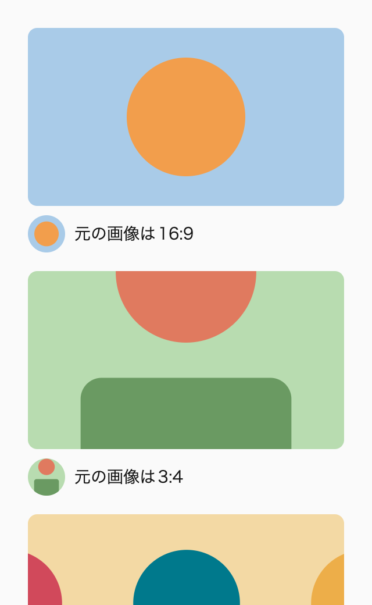
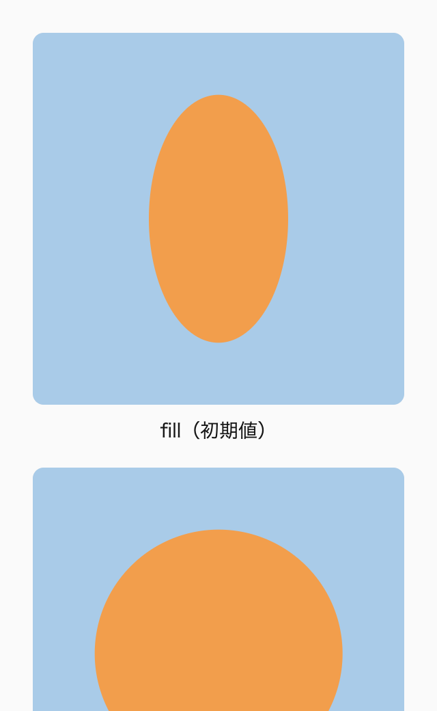
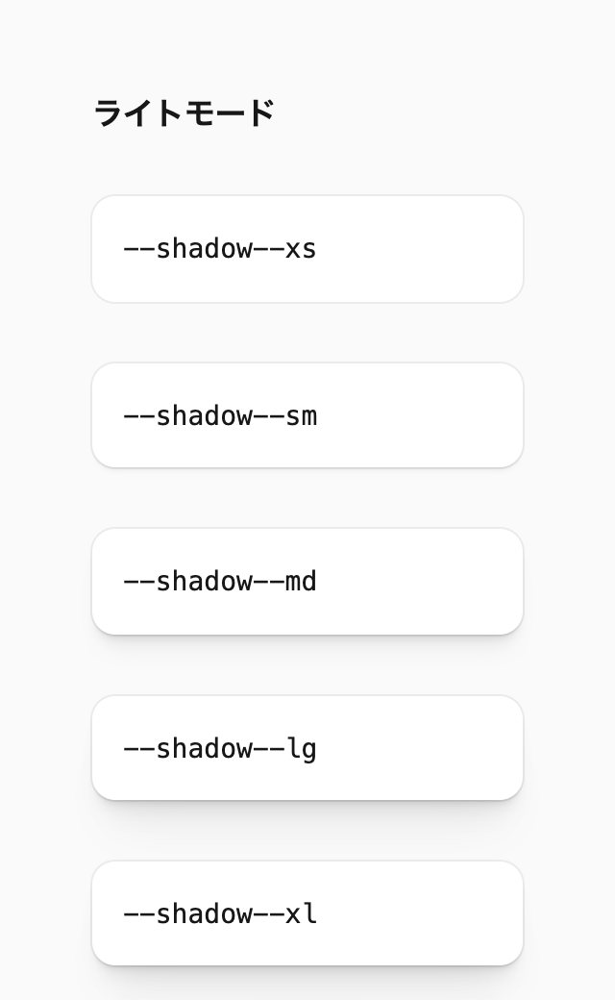
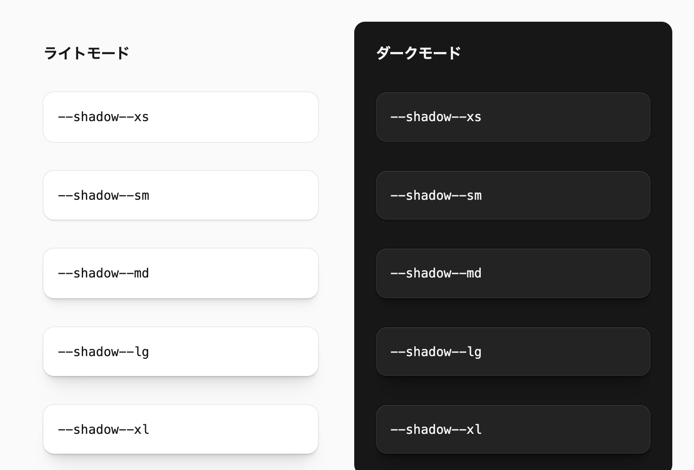
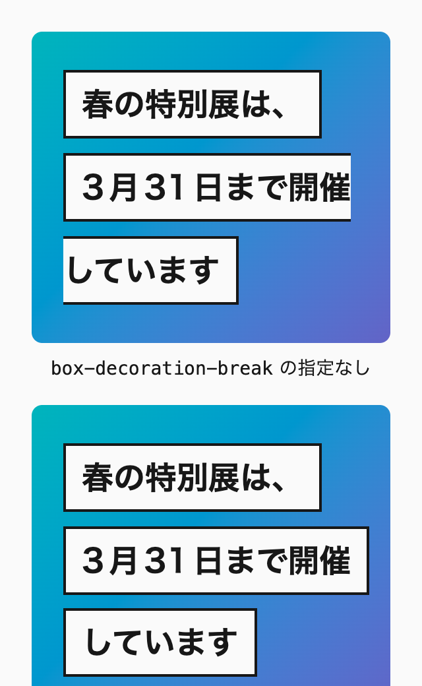
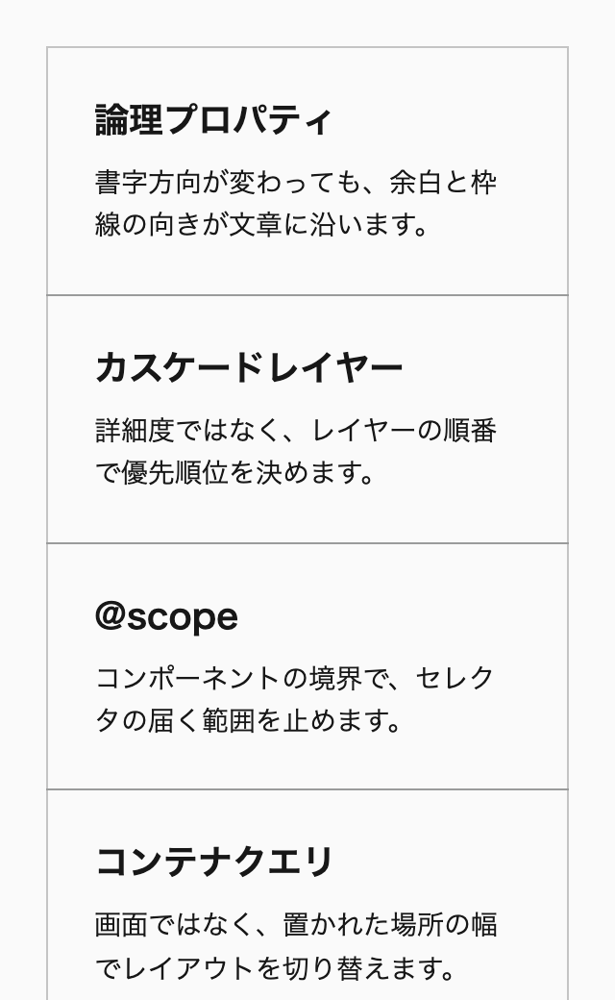

第16章 画像・装飾
画像と装飾は、比率やアイコンの色を指定するだけでは足りません。画像が表示されない場合や、強制カラーモードで色が置き換わる場合でも、内容を読めて部品の形が分かる書き方を選びます。新しい図形の機能は、未対応の環境で何が描かれるかを確かめてから取り入れます。
画像の書き方は、表示を速くすることと、レイアウトをずらさないことに直結します。<img> に大きさの属性がないと、画像を読み込んだときに後ろの内容が押し下げられます。ファーストビューの画像を遅延読み込みにすると、ページでいちばん大きな要素の表示が遅れます。比率は aspect-ratio で決め、画像の出し分けは srcset と sizes をツールで確かめて決めます。
装飾の書き方も変わりました。三角形は border の組み合わせではなく clip-path で、アイコンはマスクと currentColor で描けます。角の形は corner-shape で、タブや吹き出しの輪郭は shape() で書けるようになりました。ただし、対応しているブラウザがまだ限られる機能もあるので、未対応の環境で形が崩れる指定だけを @supports で切り替えます。
この章で判断できるようになること
この章を読むと、画像を置くときに、大きさの属性、比率、読み込みの優先度をどう指定すれば、後ろの内容を押し下げず表示も遅らせずに済むかを決められるようになります。アイコンや図形を clip-path、マスク、インラインSVGのどれで描くかも、色を文字色に合わせたいか、代替テキストが要るかから選べます。corner-shape や shape() のような新しい機能を使うときは、未対応の環境で何が描かれるかを確かめ、@supports で切り替える指定を見極められます。
この章の節
この章は次の節で構成しています。
16-1 画像の配置と読み込み ：aspect-ratio と object-fit、<img> の大きさの属性、背景の写真を <img> で置く理由、srcset と sizes、画像の形式と読み込みの優先度16-2 アイコン・SVG・マスク ：clip-path で描く図形、マスクで描くアイコンとスクロールできる領域の端、currentColor のアイコン、インラインSVGの代替テキスト16-3 面・影・角丸 ：面の4段階、層を足す影と角丸のトークン、すりガラスの背景16-4 文字とリストの装飾 ：::marker による番号の装飾、塗りの下に描く文字の縁取り、box-decoration-break で見出しの行ごとに敷く背景16-5 角の形を変える ：corner-shape によるスクワークルや反り返るタブと、画面いっぱいのときだけ角丸を消す sign()16-6 輪郭と枠線を描く ：clip-path の shape() によるタブと吹き出し、border-shape、border-area のグラデーションの枠線、マスクで描くドーナツグラフ16-7 区切り線を引く ：GridとFlexboxの gap に線を描くgap decorations、メニューの区切りの縦線と点、枠線のあるグリッドを box-shadow で描く方法
色の定義と派生色の作り方は第15章「色 」で扱います※1 。この章のコード例では @layer の記述を省略していますが、デモのCSSには省略せずに書いています。
初めて読むとき
初めて読むときは、「16-1 画像の配置と読み込み 」を読みます。16-2以降は、アイコン、面、枠線、区切り線のような装飾を作るときに読んでください。
最初に押さえるルール
次のルールを先に押さえ、ほかのルールは、該当する場面で付録A「ルール一覧 （巻3）」から引けば足ります。
次の章へ
ここまでの章で、部品が静止しているときの見た目が決まりました。ボタンやリンク、開閉するUI、フォーム部品は、ユーザーが操作すると状態が変わり、その状態をキーボードやスクリーンリーダーの利用者にも伝える必要があります※2 。
16-1 画像の配置と読み込み
画像の縦横比は aspect-ratio で決め、中身は object-fit の cover か contain で収めます。初期値の fill のまま、画像を引き伸ばさないようにします。<img> には width と height の属性を書き、srcset と sizes の値は、手で計算せずにツールで確かめて決めます。
写真を背景に敷くときも、background-image ではなく、object-fit を指定した <img> を本文と同じグリッドのエリアに置きます。ファーストビューに表示される画像には loading="lazy" を指定せず、写真のような画像はAVIFで書き出します。
アイコンや図形の描き方は「16-2 アイコン・SVG・マスク 」で、影や角丸、すりガラスの背景は「16-3 面・影・角丸 」で、番号付きリストの番号や文字の縁取りのような文字の装飾は「16-4 文字とリストの装飾 」で説明しています。
Baseline 広く利用可能 2024年3月から（新しく利用可能になったのは2021年9月）
aspect-ratio
Chrome 88 Edge 88 Firefox 89 Safari 15 iOS Safari 15 web-features 3.40.0 のデータ（2026年9月確認）
古い書き方で比率を保つと起きること
aspect-ratio が使えなかった頃は、padding-top に割合を指定して、縦横比を保っていました。padding の割合は親要素の幅を基準に計算されるので、9 / 16 * 100% を指定すれば、幅に対して16:9の高さを作れます。
🙅♂ Not Recommended: padding-top の割合で比率を作る /* 🙅♂ Not Recommended */
.frame {
position : relative ;
&::after {
content : "" ;
display : block ;
padding-top : calc ( 9 / 16 * 100 % );
}
}
.frame img {
position : absolute ;
inset : 0 ;
width : 100 % ;
height : 100 % ;
object-fit : cover ;
} この書き方では、比率を作るためのpadding-top が比率のための指定だとすぐには分かりません。
画像の側にも、よくある問題があります。枠の大きさに合わせようとして、画像へ width: 100% と height: 100% だけを指定すると、比率の違う画像が縦や横に引き伸ばされます。CMSで編集者が画像を差し替えるサイトでは、どのような比率の画像が入るかを事前に決められません。
aspect-ratio で比率を決める
縦横比は aspect-ratio で指定します。幅が決まれば、高さは比率から計算されます。擬似要素と絶対配置は要りません。
🙆♂ Recommended: aspect-ratio で比率を決め、object-fit で収める ._thumbnail {
inline-size : -webkit-fill-available ;
inline-size : stretch ;
aspect-ratio : 16 / 9 ;
object-fit : cover ;
}
._avatar {
inline-size : 48 px ;
aspect-ratio : 1 ;
border-radius : calc (infinity * 1 px );
object-fit : cover ;
} 
幅 320px（上の部分）
図16-1 元の画像の比率が違っても、サムネイルは16:9に、アバターは正円にそろう デモには、元の比率が16:9、3:4、3:1の3枚の画像を並べています。どの画像も、サムネイルは16:9の枠に、キャプションの横のアバターは正円に収まり、枠からはみ出した部分は切り取られます。
サムネイルの幅は、100% ではなく、-webkit-fill-available と stretch をこの順に書いて親の幅いっぱいに広げます（「7-4 大きさの決まり方 （7-4、巻1）」）。正方形や正円にしたいときは、aspect-ratio: 1 と書きます。aspect-ratio は <img> だけでなく、動画や <iframe>、背景を持つ <div> のような、縦横比が決まっている要素なら何にでも使えます。高さを固定したくなったら、まず aspect-ratio で表せないかを考えます。高さの決め方は「11-3 サイズと内容の変化に耐える （11-3、巻2）」でも取り上げています。
<img> には、画像の実際の大きさを width と height の属性で書きます。ブラウザは、この2つの属性から縦横比を計算し、画像を読み込む前から表示する場所を確保します。属性がないと、画像が読み込まれた瞬間に高さが決まり、下にある文章がずれて、読んでいた位置を見失います。
< img src = " thumbnail.avif " width = " 800 " height = " 450 " alt = "" /> 属性に書いた値が、そのまま表示の大きさになるわけではありません。kiso.cssは、画像に max-inline-size: 100% と block-size: auto を指定しています。枠より大きな画像は枠の幅まで縮み、高さは属性の比率を保ったまま決まります。
object-fit は cover か contain にする
大きさを決めた画像には、object-fit を指定します。初期値の fill は、画像を枠いっぱいに引き伸ばすので、比率の違う画像が歪みます。fill が望ましい場面は、ほとんどありません。

幅 320px（上の部分）
図16-2 16:9の画像を正方形の枠に入れたときの、object-fit の違い デモでは、円を描いた16:9の画像を、fill、cover、contain の順に正方形の枠に入れています。fill では円が縦長の楕円に歪み、cover では画像の左右が切り取られ、contain では画像の上下に枠の灰色の背景が残ります。
cover は、比率を保ったまま枠を覆うように拡大し、はみ出した部分を切り取ります。写真のサムネイルやメインビジュアルのように、枠を埋めることを優先する画像に向いています。contain は、画像全体が枠に収まるように縮めます。ロゴや図版のように、切り取られると困る画像に使います。
私のテンプレートでは、ベーススタイルで <img> と <video> を cover にしています。contain が必要な画像だけ、object-position で調整できます。人物の顔が写真の上のほうにあるなら、object-position: 50% 20% のように上寄りにすれば、顔が切れにくくなります。
🙆♂ Recommended: 画像と動画は cover を既定にする @layer base {
img ,
video {
object-fit : cover ;
}
} 隣の要素の高さに合わせる
グリッドの中で、画像の高さを隣の本文の高さに合わせたい場合があります。画像に block-size: 100% を指定すると、画像の元の高さで行が押し広げられ、本文の下に余白ができて間延びします。この場合は、block-size: 0 と min-block-size: 100% を組み合わせます（2026年9月、Chrome 153で確認）。
幅 320px
図16-3 block-size: 100% では、画像の元の高さで行が伸び、本文の下が空く 🙆♂ Recommended: 画像の高さを、同じ行の本文の高さに合わせる img {
inline-size : -webkit-fill-available ;
inline-size : stretch ;
block-size : 0 ;
min-block-size : 100 % ;
object-fit : cover ;
} 図16-4 画像の高さが本文の高さに合い、はみ出した部分は切り取られる block-size: 0 で画像が行の高さを押し広げないようにし、min-block-size: 100% でセルの高さまで広げています。行の高さは本文だけで決まり、画像はその高さに合わせて cover で切り取られます。
画像の上の文字には背景色を用意する
画像や動画の上に文字を載せるときは、画像が表示されなかった場合に備えて、文字と対になる背景色を指定しておきます。通信の状態によって画像を読み込めないと、白い背景の上に白い文字だけが残り、読めなくなるからです。
🙆♂ Recommended: 画像がなくても白い文字が読める背景色を敷く @scope (.scoped.hero-header) to (.scoped) {
:scope {
display : block grid ;
grid-template-areas : " --pile " ;
background-color : oklch (from currentColor sign ( 0.7 - l ) 0 h);
background-color : contrast-color( currentColor );
color : oklch ( 100 % 0 0 deg );
& > img ,
& > ._ body {
grid-area : --pile;
}
}
img {
inline-size : -webkit-fill-available ;
inline-size : stretch ;
block-size : 0 ;
min-block-size : 100 % ;
object-fit : cover ;
}
} 図16-5 画像を表示できなくても、背景色の上で白い文字が読める デモの1つ目は画像を表示できたとき、2つ目は画像を表示できなかったときのヒーローです。2つ目では、画像の代わりに黒の背景色が見え、白い文字が読めます。
背景色は、画像の平均的な色ではなく、文字色とのコントラストが取れる色にします。このコード例では、白い文字に対して黒を敷いています。文字色を変えても背景色を書き直さずに済みます。contrast-color(currentColor) だけでは、対応していない環境（Safari 18系）で背景色が付かず、画像が表示されないときに白い文字が読めなくなります。そこで、sign() で書いた同じ意味の宣言を先に置いています※1 。画像と本文は同じグリッドのエリアに重ね、画像の高さは前の項目と同じ方法で本文に合わせています。
白い背景の画像に縁を付ける
商品の写真やスクリーンショットのように、背景が白い画像を白いページに置くと、画像の縁が背景に溶けて、どこまでが画像なのかが分からなくなります。CMSで画像を差し替えられる場所では、どの画像が入るかを前もって決められないので、画像の内側に細い線を引いておきます。線は、負の outline-offset を付けた outline で描きます。
🙆♂ Recommended: 画像の内側に outline で線を引き、白い背景の画像の縁を示す ._thumbnail {
outline : 1 px solid var ( --border--base );
outline-offset : -1 px ;
} box-shadow: inset では、この線を描けません。内側の影は要素の背景の上、中身の下に描かれるので、<img> の画像に覆われて見えなくなります。outline は中身より手前に描かれ、outline-offset を負の値にすれば、画像の大きさを変えずに内側へ引けます。Chrome 152で、不透明な画像に指定した box-shadow: inset は見えず、outline の線は画像の上に表示されることを確かめました（2026年10月確認）。border で描くと、box-sizing: border-box の画像では線の分だけ画像が小さくなるので、使いません。
線の色は、枠線のトークンから選びます。濃い色にすると、白くない画像では枠が目立ちすぎます。強制カラーモードでは、outline の色はシステムカラーに置き換わります※2 。
背景の写真も <img> で置く
前の項目のヒーローのように写真を背景に敷くときは、background-image ではなく、object-fit を指定した <img> を背景に置きます。background-image を使うのは、小さな画像を繰り返して敷き詰めるパターン画像や、内容と関係のない細かな装飾に限ります。
🙅♂ Not Recommended: 背景の写真を background-image で敷く /* 🙅♂ Not Recommended */
._hero {
background-image : url ( " hero.avif " );
background-position : center ;
background-size : cover ;
} <img> にする理由は4つあります。1つ目は、<picture> や srcset と sizes で、画面の幅や解像度に合った画像を読み込めることです。background-image でも image-set() で解像度ごとの候補は書けますが、画像がレイアウトの中で表示される幅をブラウザに伝える手段はありません。2つ目は、画像だけを加工しやすいことです。背景画像の要素に指定した opacity や filter は中の文字にも及ぶので、画像だけを薄くするには擬似要素を足すことになります。<img> なら、画像に直接指定できます。
3つ目は、alt 属性で画像の意味を伝えられることです。内容を伝える写真にはalt="" にして読み上げから外します。背景画像には代替テキストを付ける手段がありません。4つ目は、読み込みの早さです。ブラウザのプリロードスキャナーは、HTMLを解析する段階で <img> を見つけて先に要求しますが、CSSの中の background-image は対象外で、スタイルシートを読み込んで適用するまで見つかりません。その画像がLCPの候補なら、見つかるまでの分だけ表示が遅れます。
🙆♂ Recommended: 背景の写真を、本文と同じエリアに重ねる img で置く < div class = " scoped hero-header " >
< img src = " hero-800.avif "
srcset = " hero-800.avif 800w, hero-1600.avif 1600w "
sizes = " 100vw "
width = " 1600 "
height = " 900 "
alt = ""
fetchpriority = " high "
/>
< div class = " _body " >
<!-- ... -->
</ div > </ div > 背景の <img> は絶対配置にせず、前の項目のコード例のように、本文と同じグリッドのエリアに置きます。重ねるだけの入れ物なら、コンポジションの「12-9 pile （巻2）」（すべての子を同じセルに重ねる）を使えます。どちらも、本文が増えれば枠が伸び、画像はその高さに合わせて cover で切り取られます。画像をHTMLで先に書けば、z-index を使わなくても本文が手前に描かれます。
🙆♂ Recommended: 敷き詰めるパターンは background-image で描く ._section {
background-image : url ( " dots.svg " );
background-size : 24 px ;
} 1枚だけ置く装飾の画像には、background-repeat: no-repeat を明示します。初期値の repeat のままだと、要素が画像より大きくなったとき、画像が繰り返して並びます。カンプの大きさでは繰り返しが見えなくても、文字が増えて要素が伸びると現れます。
🙆♂ Recommended: 1枚だけ置く装飾は、繰り返しを止める ._notice {
background-image : url ( " corner-ornament.svg " );
background-repeat : no-repeat ;
background-size : 48 px ;
} 単色やグラデーションだけの背景は、画像のファイルを読み込まず、意味も持たないので、background-image で足ります。パターン画像も、内容を伝えず、表示される幅に合わせて出し分ける必要がないので、<img> にする利点がありません。やむを得ずLCPの候補の写真を background-image で敷く場合は、<link rel="preload"> でその画像を先に読み込ませます。
レスポンシブ画像
画面の幅や解像度に合わせて、大きさの違う画像を出し分けるには、srcset と sizes の属性を使います。srcset には画像の候補とその幅を、sizes には画像がレイアウトの中で表示される幅を書きます。ブラウザは、表示される幅と画面の解像度から、ちょうどよい候補を選んで読み込みます。
< img src = " photo-800.avif "
srcset = " photo-400.avif 400w, photo-800.avif 800w, photo-1200.avif 1200w "
sizes = " (width >= 1024px) 50vw, 100vw "
width = " 1200 "
height = " 800 "
alt = " 川沿いの桜並木 "
/> 難しいのは sizes です。表示される幅はCSSのレイアウトで決まるので、余白、段組み、sizes を手で計算しません。仮の値を入れたページでRespImageLintのブックマークレットを実行し、提案された値を採用しています。
RespImageLintが提案する sizes の値は、vw を使って書かれています。sizes はCSSのプロパティではなくHTMLの属性で、画像を選ぶ時点のビューポートの幅を基準にします。本書では、sizes の中の vw を、vw を使わないという規約※3 の例外として扱います。
<picture> の <source> にある media 属性は、ビューポートを基準にした条件しか書けません。コンテナサイズクエリで配置を切り替えるコンポーネントでも、画像の切り替えはビューポートを基準にして書くしかありません。この制約は「13-3 コンテナサイズクエリ （巻2）」でも取り上げています。
形式と読み込みの優先度
写真のような画像は、AVIFで書き出します。AVIFは、WebPより10〜30%ほど小さく、2024年1月にすべての主要なブラウザで使えるようになりました。Webページで表示する画像では、ブラウザの対応を理由にJPEGやPNGを主な形式にする必要はもうありません。ただし、AVIFへの変換はWebPの2倍以上の時間がかかるので、画像の多いサイトでは、ビルドの時間を見積もっておきます。
ファーストビューに表示される画像には、loading="lazy" を指定しません。遅延読み込みにすると、ページでいちばん大きな要素の表示が遅れるからです。スクロールしないと見えない画像と <iframe> にだけ、loading="lazy" を付けます。
そのうえで、LCPの候補になる画像（ヒーロー画像のように、ファーストビューでいちばん大きく表示される画像）にだけ、fetchpriority="high" を指定して優先して読み込ませます。ファーストビューの画像すべてに指定すると、優先する画像どうしで帯域を奪い合い、肝心の画像が早まりません。
Baseline 広く利用可能 2026年6月から（新しく利用可能になったのは2023年12月）
Lazy-loading images and iframes
Chrome 77 Edge 79 Firefox 121 Safari 16.4 iOS Safari 16.4 web-features 3.40.0 のデータ（2026年9月確認）
遅延読み込みは、通信やデコードの仕事をなくすのではなく、あとへ先送りするだけです。先送りした先がスクロールや操作の最中だと、通信、デコード、レイアウトの処理が同じ時間に重なり、操作への応答（INP）や体感を悪くすることがあります。ページ内のすべての <img> に一括で付けると、この状態を作りやすくなります。ファーストビューの直下の画像にまで付けるかどうかは、実測で決めます。遅延読み込みする画像や埋め込みにも、width と height の属性か aspect-ratio で場所を確保しておきます。確保しないと、読み込んだ瞬間にレイアウトがずれます。
装飾のための画像や、隣の見出しと同じ内容を表すだけの画像には、alt="" を指定します。カードのサムネイルのように、見出しのリンクと同じ内容を繰り返す画像がその例です。意味のある画像には、内容が伝わる代替テキストを書きます。
なお、遅延読み込みの画像で sizes を自動で決める sizes="auto" は、Safariが対応していません（2026年9月確認）。
<img> には decoding="async" を指定せず、デフォルトの auto に任せます。decoding は、画像のデコードをほかの内容の表示とそろえるか（sync）、待たずにほかの内容を表示するか（async）を伝えるヒントで、auto ならブラウザが選びます。キャッシュのない通常の読み込みでは、sync と async に目立った性能の差はありません。一方、キャッシュのある状態で async を指定すると、画像以外を先に表示して画像をあとから描くので、画面がちらつきます。
ガイドライン
必須 要素の縦横比は aspect-ratio で決め、padding-top の割合で高さを作らない。
aspect-ratio-for-ratios
推奨 大きさを決めた画像や動画には object-fit の cover か contain を指定し、初期値の fill で引き伸ばさない。
object-fit-cover-or-contain
必須 <img> には、画像の実際の大きさを width と height の属性で書く。
img-width-height-attributes
必須 画像や動画の上に文字を載せるときは、画像が表示されなくても文字を読める背景色を指定する。
text-on-image-fallback-background
推奨 白い背景の画像が入りうる場所では、画像に負の outline-offset を付けた outline で内側に線を引き、縁を示す。box-shadow: inset や border では描かない。
outline-for-image-edge
推奨 背景に写真を敷くときは、background-image ではなく、object-fit を指定した <img> を本文と同じグリッドのエリアに置く。
img-over-background-image
推奨 srcset と sizes の値は、手で計算せず、RespImageLint などのツールで確かめて決める。
sizes-by-tool
禁止 ファーストビューに表示される画像に、loading="lazy" を指定しない。
no-lazy-loading-first-view
推奨 <img> に decoding="async" を指定せず、デフォルトの auto に任せる。
no-decoding-async
推奨 写真のような画像は、AVIF で書き出す。
avif-for-photos
参考リンク
16-2 アイコン・SVG・マスク
三角形のような図形は、border の組み合わせではなく clip-path で描き、polygon() の値は --shape--triangle-bottom のような名前のトークンにします。単色のアイコンは、mask-image かインラインSVGで描き、どちらも文字色に合わせて塗ります。
マスクで描くなら background-color で塗り、インラインSVGなら fill や stroke を currentColor にします。文字色を変えるだけでアイコンも一緒に変わるので、状態ごとにアイコンの色を指定し直す必要がありません。意味を持つインラインSVGのアイコンは aria-hidden="true" にし、隣に視覚的に隠したテキストを置きます。
clip-path の shape() で輪郭を描く方法と、マスクの合成で枠線やドーナツグラフを描く方法は、「16-6 輪郭と枠線を描く 」で説明しています。
図形は clip-path で描く
吹き出しの三角形のような図形は、clip-path で描きます。以前は、透明な border を組み合わせて三角形を作る方法がよく使われていました。
🙅♂ Not Recommended: border を組み合わせて三角形を作る /* 🙅♂ Not Recommended */
._tooltip {
&::after {
--_size: 16 px ;
content : "" ;
/* ... */
border-block-start : calc ( var ( --_size ) / 2 * tan ( 60 deg )) solid ;
border-inline-start : calc ( var ( --_size ) / 2 ) solid transparent ;
border-inline-end : calc ( var ( --_size ) / 2 ) solid transparent ;
}
} この方法では、三角形の大きさを3つの border の幅から逆算する必要があり、どの向きの三角形なのかもコードから読み取りにくくなります。clip-path なら、要素の幅と縦横比を決めて、形で切り抜くだけです。
🙆♂ Recommended: 形をトークンにして、clip-path で切り抜く :root {
--shape--triangle-top : polygon ( 50 % 0 , 100 % 100 % , 0 100 % );
--shape--triangle-bottom : polygon ( 0 0 , 100 % 0 , 50 % 100 % );
--shape--triangle-right : polygon ( 0 0 , 100 % 50 % , 0 100 % );
--shape--triangle-left : polygon ( 0 50 % , 100 % 0 , 100 % 100 % );
}
._tooltip {
position : relative ;
&::after {
--_size: 16 px ;
content : "" ;
/* ツールチップの下端の中央から、下へ突き出す */
position : absolute ;
inset-block-start : 100 % ;
inset-inline-start : 50 % ;
clip-path : var ( --shape--triangle-bottom );
inline-size : var ( --_size );
aspect-ratio : 2 / tan ( 60 deg );
background-color : inherit ;
translate : -50 % 0 ;
}
} 図16-6 形のトークンで切り抜いた三角形と、下向きの三角形を付けたツールチップ デモの上は、下端の中央に下向きの三角形を付けたツールチップです。その下には、4つの形のトークンで正方形を切り抜き、上、下、右、左を向いた三角形を並べています。
三角形は、ツールチップの本体を基準に絶対配置します。絶対配置した擬似要素はブロックの箱になるので、display を指定しなくても、inline-size と aspect-ratio で大きさが決まります。translate: -50% 0 で三角形の幅の半分だけ戻し、本体の中央にそろえます。
polygon() の値は直接書かず、トークンとして定義します。polygon(0 0, 100% 0, 50% 100%) という値を見て、下向きの三角形だとすぐに気づく人は多くないでしょう。--shape--triangle-bottom という名前なら、形がすぐに分かります。縦横比を 2 / tan(60deg) にすると、正三角形になります（2026年10月、Chrome 152で確認）。
2つの層を重ねて、選んだ範囲だけを切り抜く
clip-path は、図形を描くだけでなく、同じ大きさの層を2つ重ねて、上の層の一部だけを見せる使い方もできます。横に並んだタブで、選んだタブの背景色と文字色を変える場面で考えます。通常の色で描いたタブの列の上に、選んだときの色で描いた同じ列を重ね、上の列を選んだタブの範囲だけ切り抜きます。
🙆♂ Recommended: 選んだときの色で描いた列を重ね、選んだタブの範囲だけを切り抜く @scope (.scoped.segmented-tabs) to (.scoped) {
:scope {
--_count : 3 ;
--_index : 0 ;
display : block grid ;
&:has(._tab:nth-child( 2 )[ aria-selected =" true "]) {
--_index : 1 ;
}
& :has ( ._tab:nth-child ( 3 )[ aria-selected = " true " ]) {
--_index : 2 ;
}
& > ._list ,
& > ._highlight {
grid-area : 1 / 1 ;
}
}
._list ,
._highlight {
display : block grid ;
grid-auto-columns : 1 fr ;
grid-auto-flow : column ;
}
._highlight {
clip-path : xywh( calc ( var ( --_index ) * 100 % / var ( --_count )) 0 calc ( 100 % / var ( --_count )) 100 % round calc (infinity * 1 px ));
background-color : var ( --background--accent );
color : var ( --foreground--on-accent );
pointer-events : none ;
}
} Baseline 広く利用可能 2026年7月から（新しく利用可能になったのは2024年1月）
xywh()
Chrome 119 Edge 119 Firefox 122 Safari 17.2 iOS Safari 17.2 web-features 3.40.0 のデータ（2026年9月確認）
下の列（._list）は、role="tab" を付けた <button> を並べた、操作するためのタブです。上の列（._highlight）は見た目のためだけの複製なので、aria-hidden="true" で読み上げから外し、中身は <span> にしてフォーカスを受けないようにします。pointer-events: none で、クリックは下のタブに通します。どのタブを選んでいるかは、aria-selected から :has() で読み取り、--_index に入れています。
次のデモでは、タブを選ぶとスクリプトが aria-selected を付け替え、:has() で決まる --_index が変わります。上の列を切り抜く範囲が選んだタブに移り、背景と文字の色が一度で切り替わります。キーボードでは、左右の矢印キーでタブを移れます。
図16-7 選んだときの色で描いた列を重ね、選んだタブの範囲だけを切り抜いて見せる この方法では、選んだときの見た目を1つの列としてまとめて描けます。角丸の帯をタブの区切りと関係なく置くことも、列全体に掛けたグラデーションのうち選んだ範囲だけを見せることもできます。選択が変わったときに変わるのは、切り抜く範囲だけです。なお、xywh() の位置は左端から数えるので、右から左へ書く言語では、:dir(rtl) で位置の計算を反転させます。
この技法は、切り抜く範囲を transition で動かし、帯の移動に合わせて文字色が切り替わる演出として使われることがあります。しかし、本書では clip-path をペイントが起きるものとして扱います※1 。切り抜きを動かすと、動いている間は毎フレーム描き直しが起きるので、切り抜く範囲は一度で切り替えます。
アイコンをマスクで描く
単色のアイコンは、SVGを mask-image のマスクにして描けます。テンプレートでは、矢印のアイコンをdata URIのトークン（--chevron--rightward など）として定義し、擬似要素の mask-image で参照しています。色は background-color で塗るので、文字色やホバーの状態に合わせて変えられます。
🙆♂ Recommended: マスクで切り抜き、背景色で塗る ._more {
&::after {
content : "" ;
/* 空の擬似要素はインラインになり、幅と高さが効かないので、箱を作る */
display : inline flow-root ;
mask-image : var ( --chevron--rightward );
mask-repeat : no-repeat ;
mask-position : center ;
mask-size : contain ;
inline-size : 1 em ;
aspect-ratio : 1 ;
background-color : var ( --background-current );
}
} 図16-8 マスクで描いた矢印が、背景色に合わせた文字色で塗られる デモの1つ目はページと同じ配色、2つ目は背景と文字の明暗を反転させたセクションです。どちらのセクションでも、リンクの後ろの矢印は、リンクの文字と同じ色で塗られます。
display: inline flow-root は、空の擬似要素に幅と高さを持たせるための指定です。親が display: inline flex のようなフレックスコンテナなら、擬似要素はフレックスアイテムとしてブロックの箱になるので、この指定がなくても描けます。
background-color に currentColor を直接書かず、--background-current から受け取っているのは、強制カラーモードでアイコンを消さないためです※2 。マスクのプロパティは、2023年12月までにすべての主要なブラウザが接頭辞なしで対応したので、-webkit- の接頭辞は要りません。
Baseline 広く利用可能 2026年6月から（新しく利用可能になったのは2023年12月）
マスク（mask-image など）
Chrome 120 Edge 120 Firefox 53 Safari 15.4 iOS Safari 15.4 web-features 3.40.0 のデータ（2026年9月確認）
スクロールできる領域の端をマスクで薄くする
横にスクロールできるタグやタブの列では、続きがあることを見た目で示します。端に線や影を付ける方法は、そこで区切られているように見え、続きがあることは伝わりにくくなります。背景と同じ色のグラデーションを端に重ねる方法は、背景が写真や別の色になると色がずれて、帯が浮いて見えます。
端を薄くするときは、mask-image に、両端が透明になるグラデーションを指定します。マスクは要素の中身そのものを透かすので、背景が何色でも、端の項目が途中で薄れて、続きがあるように見えます。マスクに使われるのはグラデーションの不透明度だけなので、#000 は「そのまま見せる」範囲を表しているだけです。
🙆♂ Recommended: スクロールコンテナの両端を、マスクのグラデーションで薄くする @scope (.scoped.tag-scroller) to (.scoped) {
ul {
--_fade : 24 px ;
display : block flex ;
gap : 8 px ;
overflow-x : auto ;
mask-image : linear-gradient ( to right , transparent , # 000 var ( --_fade ), # 000 calc ( 100 % - var ( --_fade )), transparent );
}
} グラデーションの向きには、to inline-end のような論理方向のキーワードがありません。Chrome 152では、CSS.supports() で linear-gradient(to inline-end, …) が無効と判定されました（2026年10月確認）。そこで、両端を同じ幅で薄くして、グラデーションを左右対称にします。右から左へ書く言語でも、同じ見た目になります。
マスクは、要素の境界の外に描かれるものも切り取ります。Chrome 152で確かめたところ、マスクを指定したスクロールコンテナの outline は表示されませんでした（2026年10月確認）。中にリンクのないスクロールコンテナは、キーボードでフォーカスを受けることがあり、そのときのフォーカスリングも見えなくなります。この場合は、親の要素に &:has(> ul:focus-visible) でリングを出します。リングを親に出す書き方は、「17-4 カード全体をリンクにする 」の例と同じです。
上の例は、先頭までスクロールしていても、先頭の側の端を薄くします。スクロールできる方向の端だけを薄くするには、スクロールの位置を条件にする必要があります。方法は2つあります。1つは、スクロール駆動アニメーションで薄くする幅を変える方法です※3 。もう1つは、scroll-state(scrollable: inline-end) のようなコンテナクエリで表示を切り替える方法です※4 。
アイコンは currentColor で文字色に合わせる
インラインSVGのアイコンは、fill や stroke を currentColor にして、文字色に合わせます。ボタンの種類や状態ごとにアイコンの色を指定し直す必要がなくなり、文字色を変えるだけで、アイコンも一緒に変わります。
🙅♂ Not Recommended: 状態ごとにアイコンの色を指定し直す /* 🙅♂ Not Recommended */
button {
color : var ( --foreground--base );
&: disabled {
color : var ( --foreground--muted );
}
}
._icon {
fill : var ( --foreground--base );
&:is(button: disabled *) {
fill : var ( --foreground--muted );
}
} 🙆♂ Recommended: アイコンは文字色に合わせ、文字色だけを切り替える button {
color : var ( --foreground--base );
&: disabled {
color : var ( --foreground--muted );
}
}
._icon {
fill : currentColor ;
} デモ16-2-4 無効なボタンでは、文字色だけを変えると、アイコンと枠線も同じ色になる（補足サイト）
デモの1つ目は通常のボタン、2つ目は disabled を付けたボタンです。2つ目では文字色を薄い灰色に変えているだけですが、アイコンと枠線も同じ灰色になります。
border の色を省略した場合も、初期値は currentColor です。文字と同じ色の枠線なら、border: 1px solid とだけ書けば足ります。色を2か所に書かなければ、片方だけ変え忘れることもありません。
アイコンの大きさは、inline-size: 1em と aspect-ratio: 1 で文字の大きさに合わせます。テンプレートでは .icon というクラスで、--icon--size を受け取れるようにしています※5 。
インラインSVGの
意味を持つアイコンをインラインSVGで置くときは、SVGに aria-hidden="true" を付けて読み上げの対象から外し、隣に視覚的に隠したテキストを置きます。
< a href = " https://example.com/ " target = " _blank " >
関連資料
< svg class = " icon " aria-hidden = " true " viewBox = " 0 0 24 24 " fill = " none " stroke = " currentColor " >
< path d = " M17 2H22V7 " />
< path d = " M13 11L21.5 2.5 " />
</ svg > < span class = " -visually-hidden " > 新しいウィンドウが開きます </ span > </ a > SVGの中の <title> や aria-label で名前を付ける方法もありますが、これらは機械翻訳されず、ページ内検索の対象にもなりません。ふつうのテキストとして置けば、翻訳、検索、選択してのコピーのすべてに対応できます※6 。
単色のアイコンの描き方を選ぶ
単色のアイコンを置く方法は、擬似要素の mask-image、インラインSVG、外部のファイルを読み込む <img> の3つです。どれを選ぶかは、文字色に合わせたいか、HTMLにアイコンを書けるかで決まります。違いを次の表にまとめます。
方法
色を文字色に合わせる
強制カラーモード
代替テキスト
向く場面
擬似要素の mask-image
background-color で合わせられる背景色が消えるので、--background-current でシステムカラーに戻す
持てない。意味があれば隣にテキストを置く
矢印や外部リンクの印のように、CSSだけで足す装飾
インラインSVG
fill や stroke の currentColor で合わせられる色が置き換わらないことがあるので、fill と stroke をシステムカラーに固定する
aria-hidden="true" にして、隣に視覚的に隠したテキストを置く意味のあるアイコンや、線と塗りを使い分ける複雑な形
外部のファイルの <img>
合わせられない。画像の中の色のまま
影響を受けないので、背景に溶け込むなら filter で塗りつぶす
alt 属性で付ける色を変えないロゴや、多色の画像
文字色に合わせる必要があるアイコンは、mask-image かインラインSVGのどちらかになります。HTMLに手を入れずにCSSだけで足したい装飾なら mask-image を、HTMLの中で意味を持たせたいアイコンならインラインSVGを選びます※7 。
ガイドライン
推奨 三角形などの図形は border の組み合わせではなく clip-path で描き、polygon() の値は --shape--triangle-bottom のようなトークンにする。
clip-path-shape-tokens
推奨 スクロールできる領域の端を薄くして続きを示すときは、端に線や背景と同じ色のグラデーションを重ねず、スクロールコンテナの mask-image に両端が透明になるグラデーションを指定する。
scroll-edge-fade-with-mask
推奨 単色のアイコンの色は currentColor で文字色に合わせ、状態ごとにアイコンの色を指定し直さない。
icon-current-color
推奨 意味を持つインライン SVG のアイコンは aria-hidden="true" にし、隣に視覚的に隠したテキストを置く。
inline-svg-hidden-with-text
参考リンク
16-3 面・影・角丸
面の背景は、ページ、カード、ダイアログ、メニューの役割で決めた4段階のトークンから選びます。影は、光源の向きをそろえ、段階が上がるほどオフセットとぼかしを倍にした層を足して作ります。ライトモードでは面の高さを影だけで表し、影の見えにくいダークモードでは、高い面ほど背景を明るくします。角丸も、段階を決めたトークンから選び、入れ子にした内側の角丸は、外側の角丸から間の余白を引いた値にします。
すりガラスの背景は、半透明の背景に backdrop-filter: blur() を重ねて作ります。ぼかしに混ざるのは、要素の真後ろにある色だけです。
どれも要素の表面に付ける装飾なので、作るものに合わせて必要な見出しだけを読めば足ります※1 。画像の比率と読み込みは「16-1 画像の配置と読み込み 」で、アイコンと図形は「16-2 アイコン・SVG・マスク 」で扱います。
面の背景は役割で4段階に分ける
画面には、高さの違う面が重なります。本書のデモでは、面の背景を4つの役割ごとのセマンティクスのトークンにしています。ページは --background--base、カードは --background--surface です。ダイアログは --background--overlay、メニューやポップオーバーは --background--raised です。
ライトモードでは、--background--base 以外をすべて白にし、面の高さは影だけで表します。ダークモードでは、暗い背景の上で影がほとんど見えないので、高い面ほど背景を明るくします。明るい背景は、ページの背景のプリミティブ（--color--neutral--900）から、相対カラー構文で明度を足して作ります。
🙆♂ Recommended: 面の背景を役割で決め、ダークモードでは高い面ほど明るくする :root {
--color--neutral--50 : oklch ( 98.5 % 0 0 deg );
--color--neutral--900 : oklch ( 20.5 % 0 0 deg );
--background--base : light-dark( var ( --color--neutral--50 ), var ( --color--neutral--900 ));
--background--surface : light-dark( oklch ( 100 % 0 0 deg ), oklch (from var ( --color--neutral--900 ) calc (l + 0.05 ) c h));
--background--overlay : light-dark( oklch ( 100 % 0 0 deg ), oklch (from var ( --color--neutral--900 ) calc (l + 0.085 ) c h));
--background--raised : light-dark( oklch ( 100 % 0 0 deg ), oklch (from var ( --color--neutral--900 ) calc (l + 0.12 ) c h));
} --background--raised を --background--overlay より明るくしているのは、メニューがダイアログの中でも開くからです。2つが同じ背景なら、ダイアログの中で開いたメニューは、ダークモードでダイアログと見分けがつかなくなります。メニューを最も明るくしておけば、ページの上でもダイアログの上でも、メニューは置かれた面より明るく表示されます。
置かれた面より1段上の背景を選ぶ、相対的な高さの作り方もあります。祖先が宣言した高さの値をスタイルクエリで読み、1段上の値に切り替える方法です。本書はこの方法を採りません。コンポーネントが外側のコンポーネントの値を問い合わせることになり、外側のコンポーネントのコンテナを問い合わせないという本書の約束（container-name-required
図16-9 ページ、カード、ダイアログ、ダイアログの中のメニューを重ねたとき デモでは、ページの上にカードとダイアログを置き、ダイアログの中にメニューを開いています。影は、カードに --shadow--sm、ダイアログに --shadow--lg、メニューに --shadow--xl を付けています。背景が明るい順（カード、ダイアログ、メニュー）に、影も大きい段階にしています。デモは本のページのテーマに合わせて切り替わります。ライトモードでは、カード、ダイアログ、メニューはどれも白い背景で、影の大きさだけが違い、メニューの影がもっとも大きく落ちます。ダークモードでは、カード、ダイアログ、メニューの順に背景が明るくなり、ダイアログの中のメニューも、ダイアログより明るい面として見分けられます。
影は層を足して高さを表す
影も、段階的に高くなるスケールとしてトークンにします。画面の光源は1つに決め、どのトークンも同じ向きの影にします。本書の例は真上からの光なので、水平方向のオフセットは0です。斜めの光にするなら、水平と垂直のオフセットの比を、すべての層でそろえます。
段階が上がるごとに、前の段階の影に層を足します。足す層のオフセットとぼかしは1、3、6、12、24、48pxと、おおむね倍にしていき、広がり（4つ目の値）はその半分を負の値で指定します。負の広がりで影を要素より小さくすると、下にずらした影が要素の左右からはみ出しません。どの層も不透明度は同じです。要素の近くほど層が重なって影が濃くなり、段階が高いほど薄い影が遠くまで落ちるので、段階ごとに不透明度を調整しなくても、高さの違いが読み取れます。
🙆♂ Recommended: 段階が上がるごとに、オフセットとぼかしを倍にした層を足す :root {
--shadow--xs :
inset 0 1 px 0 0 var ( --shadow--highlight-color ),
inset 0 0 0 1 px var ( --shadow--highlight-color ),
0 0 0 1 px var ( --shadow--ring-color );
--shadow--sm :
var ( --shadow--xs ),
0 1 px 1 px -0.5 px var ( --shadow--color ),
0 3 px 3 px -1.5 px var ( --shadow--color );
--shadow--md :
var ( --shadow--sm ),
0 6 px 6 px -3 px var ( --shadow--color ),
0 12 px 12 px -6 px var ( --shadow--color );
--shadow--lg :
var ( --shadow--md ),
0 24 px 24 px -12 px var ( --shadow--color );
--shadow--xl :
var ( --shadow--lg ),
0 48 px 48 px -24 px var ( --shadow--color );
} 最も低い --shadow--xs は、ぼかしのない1pxの縁取りです。border と違って要素の大きさに加わらないので、カードの枠線の代わりに使えます。上の段階はどれも --shadow--xs を含むので、影を付けた面には必ず縁取りが付きます。枠線を border で引くときは、--border--base の色を使います。値は color-mix(in oklab, var(--foreground--base) 12%, transparent) です。文字色を透明と混ぜているので、どの面の上でも同じようになじみます※2 。

幅 320px（上の部分）

幅 768px（上の部分）
図16-10 同じ影のトークンを、ライトモードとダークモードの背景に置いたとき デモでは、ライトモードとダークモードの背景に、--shadow--xs から --shadow--xl までの影を付けたカードを並べています。ライトモードでは、段階が上がるほど影が濃く、下に長く伸びます。ダークモードでは段階の違いがほとんど見えず、カードの端は、内側の縁取りと上辺の細いハイライトで分かります。ダークモードで高さを背景の明るさで表すのは、このためです（2026年10月、macOSのChrome 152で確認）。
影の色は、色のトークン（--shadow--color、--shadow--ring-color、--shadow--highlight-color）にして、light-dark() でライトとダークの値を持たせます。light-dark() は色の値しか切り替えられず、box-shadow の値そのものをライトとダークで書き分けられないからです。影の形は1組だけ定義し、各層の色だけをテーマで切り替えます。ダークモードで足す上辺のハイライトと内側の縁取りは、ライトモードでは使わないので transparent にしています。
🙆♂ Recommended: 影の形は1組にし、各層の色を light-dark() で切り替える :root {
--shadow--color : light-dark( oklch ( 0 % 0 0 deg / 6 % ), oklch ( 0 % 0 0 deg / 18 % ));
--shadow--ring-color : light-dark( oklch ( 0 % 0 0 deg / 6 % ), oklch ( 0 % 0 0 deg / 24 % ));
--shadow--highlight-color : light-dark( transparent , oklch ( 100 % 0 0 deg / 4 % ));
} 影の色は、ダークモードでも黒のままにし、不透明度を上げます。暗い背景で白い影を付けると、影ではなく光って見えるからです。上辺のハイライトは白ですが、外に落ちる影ではなく、光の当たる面の縁として内側に1pxだけ描くものです。影は強制カラーモードでは消えるので、要素の境界は影だけで表しません。
本書のデモの背景は無彩色なので、ライトモードの影も黒です。色のある背景に影を落とすなら、影の色を背景の色相に寄せ、明度と彩度を下げた色にします。灰色がかった黒の影を色のある背景に重ねると、背景がくすんで見えるからです。
層を重ねた影は、描画の計算量が層の数に比例して増えます。段階が高い影ほど層が多いので、transition や animation で影そのものを動かすと、古い端末ではコマ落ちしやすくなります。影を動かしたいときは、影を付けた擬似要素の opacity だけを動かします。透明な部分の輪郭に沿わせたいときは、box-shadow ではなく filter: drop-shadow() を使います。
角丸はトークンから選ぶ
角丸は、--rounded--sm（4px）、--rounded--md（8px）、--rounded--lg（12px）の段階と、完全な角丸の --rounded--full をトークンにしています。--rounded--full の値は calc(infinity * 1px) です。999px のような大きな値を書く方法もありますが、「十分に大きい値」という意図は infinity のほうが正確に伝わります※3 。
🙆♂ Recommended: 内側の角丸は、外側の角丸から余白を引いた値にする @scope (.scoped.account-menu) to (.scoped) {
:scope {
--_radius : var ( --rounded--lg );
--_padding : 4 px ;
padding : var ( --_padding );
border-radius : var ( --_radius );
}
li {
border-radius : calc ( var ( --_radius ) - var ( --_padding ));
}
} 図16-11 内側の角丸を外側と同じにすると、角の部分だけ余白が広く見える デモの1つ目は内側にも外側と同じ16pxを、2つ目は16pxから余白の8pxを引いた8pxを指定したメニューです。選んでいる項目の背景の角を見比べると、1つ目では外側の角との間が辺の部分より広く空き、2つ目では同じ幅にそろいます。
角丸の要素の中に、角丸の要素を入れ子にする場合は、内側の角丸を「外側の角丸から間の余白を引いた値」にします。外側と内側に同じ値を指定すると、角の部分だけ余白が広く見えてしまいます。本書のデモでは、外側のパネルに --rounded--lg を、余白4pxの内側の項目に --rounded--md を使っていて、12pxから4pxを引いた8pxになります※4 。
すりガラスの背景は、真後ろの色だけが混ざる
backdrop-filter: blur() で、要素の背後をぼかしたすりガラスの背景を作れます。効果を見せるには、要素の背景を半透明にします。ぼかしの対象になるのは、その要素の真後ろにあるピクセルだけです。固定ヘッダーの少し下にある色付きの要素は、ヘッダーに重なるまでぼかしに混ざらず、スクロールの途中で急に色が現れます。
🙆♂ Recommended: 半透明の背景に backdrop-filter を重ねる ._header {
position : sticky ;
inset-block-start : 0 ;
background-color : oklch (from var ( --background--base ) l c h / 70 % );
backdrop-filter : blur ( 12 px );
} デモ16-3-4 スクロールすると、ヘッダーの真後ろにある色だけがぼかされて混ざる（補足サイト）
デモの枠の中をスクロールすると、色の付いたブロックがヘッダーの後ろを通ります。ヘッダーに重なった部分の色だけがぼかされて透け、まだ重なっていないブロックの色はヘッダーに混ざりません。
-webkit- の接頭辞は書きません。Safariは18から接頭辞なしで対応しています（2026年9月確認）。backdrop-filter は、固定配置の子孫の包含ブロックにもなるので、子に position: fixed を置くと、期待した位置になりません※5 。祖先に opacity や mask、clip-path があると、ぼかしの対象がその祖先の内側に限られる点にも注意します。
Baseline 新しく利用可能 2024年9月から
backdrop-filter
Chrome 76 Edge 79 Firefox 103 Safari 18 iOS Safari 18 web-features 3.40.0 のデータ（2026年9月確認）
固定ヘッダーの背景色を、スクロール位置のセクションに合わせて切り替えたいときは、ヘッダーの背景を書き換える代わりに、ヘッダーの後ろに position: sticky の色付きの要素（ブロッカー）を置く方法があります。ブロッカーは、自分の入っているセクションの外へは追従しないので、セクションを抜けると次のセクションの色に入れ替わります。ただし、各セクションの先頭に、ヘッダーと同じ高さの余白が必要です。ヘッダーを高さのあるときだけ固定する場合※6 は、ブロッカーも同じ条件の中に書き、余白が取れない場面では別の方法を選びます。
ガイドライン
推奨 面の背景は、ページ、カード、ダイアログ、メニューの役割で決めた段階のトークンから選び、置かれた面からの相対的な高さで決めない。
surface-levels-by-role
推奨 ダークモードでは、高い面ほど背景を明るくし、面の高さを影だけで表さない。
lighter-surface-in-dark-mode
推奨 影の色は light-dark() で切り替える色のトークンにし、ダークモードでも黒のまま不透明度を上げる。
shadow-black-in-dark-mode
推奨 影のトークンは光源の向きをそろえ、段階が上がるほど、オフセットとぼかしを倍にした層を足す。
shadow-tokens-light-source
非推奨 重ねた影（複数の box-shadow）そのものを、transition や animation で動かさない。
no-animate-layered-shadow
参考リンク
16-4 文字とリストの装飾
番号付きリストの番号は ::marker で色と大きさを変え、番号を円で囲むような装飾が要るときだけ、::before に counter() で番号を描きます。文字の縁取りは -webkit-text-stroke で描いて、paint-order: stroke fill で塗りの下に置きます。見出しの行ごとに敷く背景は、インラインの要素に box-decoration-break: clone を指定して描きます。
どれも、組み終えた文字やリストに付ける装飾です※1 。面の背景、影、角丸のような要素の表面の装飾は「16-3 面・影・角丸 」で説明しています。3つの装飾は互いに独立しているので、作るものに合わせて必要な見出しだけを読めば足ります。
番号付きリストのマーカーは ::marker で装飾する
<ol> の番号の色や大きさを変えたいときは、::marker を使います。リストの意味を保ったまま、color、font-*、content を指定できます。ただし、Safariが反映するのは color と font-size だけなので、指定はこの2つに限ります※2 。
🙆♂ Recommended: マーカーの色を ::marker で変える ._step {
&::marker {
color : var ( --foreground--accent );
}
} ::marker には、background や border、padding のようなボックスのプロパティを指定できません。番号を円で囲む、太くするといった装飾には足りないので、そのときだけ list-style-type: "" でマーカーを空にし、::before に counter() で番号を描きます。古い記事にある list-style: none での書き方は、本書では使いません※3 。
デモ16-4-1 ::marker で番号の色を変えたリストと、::before で番号を円で囲んだリスト（補足サイト）
デモの1つ目は ::marker で番号を青にしたリスト、2つ目は ::before で番号を青い円で囲んだリストです。
kiso.cssは、リストのマーカーを list-style-type: "" で空にしています。::marker で装飾するリストでは、list-style-type: revert でブラウザのデフォルトの番号に戻し、マーカーを置く余白を padding-inline-start で確保します。円で囲むリストでは、空のマーカーをそのまま使い、counter-reset と counter-increment で数えた番号を描きます。
Baseline 一部のブラウザのみ
::marker
Chrome 86 Edge 86 Firefox 80 Safari 未対応 iOS Safari 未対応 web-features 3.40.0 のデータ（2026年9月確認）
文字の縁取りは塗りの下に描く
写真の上の見出しやバナーの文字に、縁取りを付けたいことがあります。文字の縁取りは -webkit-text-stroke で描きます。接頭辞が付いていますが、WHATWGのCompatibility Standardで定義され、すべての主要なブラウザが対応しています。接頭辞のない書き方はないので、理由のコメントを添えて、Stylelintの警告を無効にします。
Baseline 広く利用可能 2019年10月から（新しく利用可能になったのは2017年4月）
-webkit-text-stroke
Chrome 4 Edge 15 Firefox 49 Safari 3 iOS Safari 2 web-features 3.40.0 のデータ（2026年9月確認）
ただし、縁取りの線は字形の輪郭を中心に、内側と外側へ半分ずつ描かれます。初期値では塗りの上に線を重ねるので、線を太くするほど、内側の半分が塗りを覆って文字が細くなります。画数の多い漢字では、字の中のすき間が線で埋まり、読めなくなることもあります。
🙅♂ Not Recommended: 太い縁取りを塗りの上に重ねる /* 🙅♂ Not Recommended */
._title {
color : oklch ( 100 % 0 0 deg );
/* 文字の縁取りは、接頭辞付きの指定でしか書けない（2026年9月） */
/* stylelint-disable-next-line property-no-vendor-prefix */
-webkit-text-stroke : 8 px oklch ( 25 % 0 0 deg );
} paint-order: stroke fill を指定すると、線を先に描き、その上に塗りを重ねます。線の内側の半分は塗りに隠れ、外側の半分だけが縁取りとして見えます。字の形が崩れないので、縁取りを太くしても読みやすさを保てます。
🙆♂ Recommended: 縁取りを塗りの下に描く ._title {
color : oklch ( 100 % 0 0 deg );
/* 文字の縁取りは、接頭辞付きの指定でしか書けない（2026年9月） */
/* stylelint-disable-next-line property-no-vendor-prefix */
-webkit-text-stroke : 8 px oklch ( 25 % 0 0 deg );
paint-order : stroke fill ;
} デモ16-4-2 paint-order を指定すると、縁取りが塗りの下に描かれる（補足サイト）
デモの1つ目は paint-order の指定なし、2つ目は paint-order: stroke fill です。1つ目では8pxの線が白い文字の内側にも重なって文字が細く見え、2つ目では文字の太さを保ったまま外側に縁取りが付きます。
見えるのは線の外側の半分なので、線の幅は、見せたい縁取りの2倍を指定します。上の例では、8pxの線で4pxの縁取りになります。paint-order はもともとSVGのプロパティで、HTMLの文字には、2024年3月にすべての主要なブラウザで使えるようになりました。対応していない環境では、縁取りが塗りの上に重なるだけです。
Baseline 広く利用可能 2026年9月から（新しく利用可能になったのは2024年3月）
paint-order
Chrome 123 Edge 123 Firefox ≤66 Safari ≤12 iOS Safari ≤12 web-features 3.40.0 のデータ（2026年9月確認）
縁取りは、読みやすさを補う装飾として使います。-webkit-text-fill-color: transparent で塗りを消して、縁取りだけの文字にすると、細い線だけで字の形を読み取ることになり、背景とのコントラストも確かめにくくなります。本文や長い見出しには使わず、短い装飾の文字に限ります。
見出しの行ごとに背景を敷く
キービジュアルの上の見出しでは、文字の後ろに行ごとの帯（座布団）を敷くデザインがよくあります。座布団は、見出しの中のインラインの要素に padding、border、背景色を付け、box-decoration-break: clone を指定して描きます。行の数だけ要素を分けたり、擬似要素で帯を重ねたりする必要はありません。
インラインの要素が複数の行にまたがると、背景と border は行ごとの断片に分けて描かれます。初期値の slice では、1本の帯を行の端で切ったように描かれるので、折り返した位置の padding と border がなくなります。clone を指定すると、断片ごとに padding と border が付き、各行が独立した座布団になります。ブロックやインラインブロックの要素は、行をまたいでも1つの箱のままなので、行ごとには描けません。座布団は、必ずインラインの要素に付けます。
🙆♂ Recommended: インラインの要素に clone を指定し、行の間隔を座布団の高さから決める @scope (.scoped.text-cushion) to (.scoped) {
:scope {
--_space : var ( --text-cushion--space , 8 px );
--_padding : var ( --text-cushion--padding , 0.5 em );
--_border-width : var ( --text-cushion--border-width , 2 px );
padding : var ( --_padding );
border : var ( --_border-width ) solid currentColor ;
background-color : var ( --background--base );
/* Safari は接頭辞なしの box-decoration-break に対応していない（2026年10月） */
/* stylelint-disable-next-line property-no-vendor-prefix */
-webkit-box-decoration-break : clone ;
box-decoration-break : clone ;
/* 座布団の高さと間隔から、行の間隔を長さで決める。中に子要素を置かない */
/* stylelint-disable-next-line declaration-property-unit-allowed-list */
line-height : calc ( 1 cap + ( var ( --_padding ) + var ( --_border-width ) + var ( --_space )) * 2 );
}
} 改行の位置は、「14-4 文字サイズと改行 」の .-br ユーティリティで決めます。日本語のときだけ span をブロックにして改行するユーティリティで、<br> と違い、機械翻訳で言語が変わると改行がなくなります。座布団の要素は、.-br の span の内側に置きます。
改行する位置で .-br の span を分け、その内側に座布団を置く < h2 > < span class = " -br " >< span class = " scoped text-cushion " > 春の特別展は、 </ span ></ span > < span class = " -br " >< span class = " scoped text-cushion " > 3月31日まで開催しています </ span ></ span > </ h2 > 
幅 320px（上の部分）
図16-12 幅が足りずに折り返した行にも、clone なら padding と枠線が付く デモの1つ目は box-decoration-break の指定なし、2つ目は clone です。幅のボタンで320pxにすると「3月31日まで開催しています」の行が折り返し、1つ目では折り返した位置の行の端に padding と枠線が付かず、2つ目では折り返したどの行にも付きます。
Safariは、接頭辞付きの -webkit-box-decoration-break にしか対応していません（2026年10月確認）。接頭辞なしの宣言だけでは、Safariで座布団が行の端で切れるので、接頭辞付きの宣言を前に併記します※4 。
Baseline 一部のブラウザのみ
box-decoration-break
Chrome 130 Edge 130 Firefox 32 Safari 未対応 iOS Safari 未対応 web-features 3.40.0 のデータ（2026年9月確認）
行の間隔には注意が要ります。インラインの要素の上下の padding と border は、行の高さに加わらず、上下の行へはみ出して描かれます※5 。行の間隔が座布団の高さより狭いと、上下の座布団が重なります。座布団の高さは、文字の内容領域の高さに、上下の padding と border を足した値です。そこで line-height を、文字の高さに padding、border、座布団の間隔を上下の分だけ足した長さにしています。この line-height は長さで書くので、本書の「line-height は単位のない数値で指定する」ルールの例外です。長さの line-height は子要素にそのまま継承されるので、座布団の中には文字サイズの違う子要素を置かないようにし、理由をコメントに残して警告を無効にします。
式の文字の高さには、大文字の高さの 1cap を使っています。ただし、背景が描かれる内容領域の高さは、フォントのアセントとディセントで決まり、1cap や 1em と一致するとは限りません。Chrome 152で測ると、ヒラギノ角ゴシックの内容領域は 1em、macOSの system-ui は約 1.18em でした（2026年10月確認）。座布団の間の実際のすき間は、--_space の2倍から、内容領域と 1cap の差を引いた長さになります。--_space はすき間そのものではないので、使うフォントで表示を確かめて値を決めます。
ガイドライン
推奨 番号付きリストの番号の色や大きさを変えるときは、list-style: none と ::before ではなく、::marker に color と font-size を指定する。
marker-for-list-number-style
推奨 文字の縁取りは -webkit-text-stroke で描き、paint-order: stroke fill で塗りの下に置く。
text-stroke-paint-order
推奨 行ごとに背景や枠線を敷く装飾は、インラインの要素に -webkit-box-decoration-break: clone と box-decoration-break: clone を併記して描く。
inline-decoration-clone-with-prefix
参考リンク
16-5 角の形を変える
角の形は、border-radius で角丸の大きさを決め、corner-shape でその角をどんな曲線で結ぶかを決めます。Appleの画面にあるようななめらかな角や、タブの下の端が外側へ反り返る形は、以前は画像や複数のcorner-shape なら、1つの宣言で書けます。
ただし、corner-shape に対応しているブラウザは、まだ限られています。未対応の環境で「形が少し素朴になるだけ」で済むなら、そのまま書きます。「部品が崩れて見える」なら、@supports で従来の書き方に切り替えます。この節では、そのうえで、要素が画面いっぱいに広がったときだけ角丸を消す sign() の書き方も説明します※1 。
角丸だけでは作れない形
border-radius で作れるのは、四分円か四分楕円の角だけです。実際のデザインには、ここから外れる形がよく出てきます。直線から曲線へなめらかにつながる角（スクワークル）、角を斜めに切り落とした形、下の端が外側へ反り返るように広がるタブなどです。
これらは、これまで別の手段で作ってきました。反り返るタブなら、左右に擬似要素を1つずつ置き、radial-gradient() のマスクで角を削ります。動きはしますが、形を作るための要素と、半径から逆算した位置の値が増え、コードから形を読み取れなくなります。
新しい仕様では、こうした角をプロパティで直接書けるようになりました。一方で、新しい書き方を選ぶときは、未対応の環境での見え方を見分ける必要があります※2 。
corner-shape で角の形を変える
corner-shape は、border-radius で決めた角の領域を、どんな曲線で結ぶかを指定するプロパティです。初期値の round が従来の角丸で、squircle にするとスクワークルになります。ほかに、外側から内側へえぐる scoop、角を直線で切り落とす bevel、角を四角く切り欠く notch があります。キーワードは superellipse() の値の別名です。計算された値は、squircle が superellipse(2)、round が superellipse(1) です。bevel は superellipse(0)、scoop は superellipse(-1) になります（2026年10月、Chrome 152で確認）。
図16-13 border-radius: 24px の正方形に、corner-shape のキーワードを指定したとき このデモでは、同じ角丸の正方形を5つ並べ、それぞれに round、squircle、bevel、scoop、notch を指定しています。対応している環境（Chrome）では、四隅が順に、円弧の角丸、スクワークル、斜めの切り落とし、内側へのえぐれ、四角い切り欠きになります。このデモは、corner-shape に対応していない環境では、5つとも同じ角丸で表示されます。notch のように角丸から最も離れた形でも、未対応の環境では角丸に戻るだけです。
🙆♂ Recommended: 錠剤型のボタンに corner-shape を1行足す @scope (.scoped.button) to (.scoped) {
:scope {
padding-block : 12 px ;
padding-inline : 32 px ;
border-radius : calc (infinity * 1 px );
corner-shape : squircle;
background-color : var ( --background--inverse );
color : var ( --foreground--inverse );
}
} 図16-14 錠剤型のボタンと、corner-shape: squircle を足したボタン デモの1つ目は corner-shape を初期値に戻した錠剤型のボタン、2つ目は corner-shape: squircle を足したボタンです。対応している環境（Chrome）では、2つ目のボタンの左右の端が、半円より角張った曲線になります。
私は、スクワークルのボタンを作るときに、錠剤型のボタンへ corner-shape: squircle を1行足すだけにしています。対応していない環境では、この宣言が無視され、錠剤型のボタンとして表示されます。形は少し変わりますが、ボタンとしての見え方は崩れないので、@supports で囲む必要はありません※3 。
corner-shape は、border-radius が0の角には効きません。描くのは border-radius で決めた領域の中の曲線だけなので、角丸の大きさは必ず border-radius で指定します。枠線、影、outline も、corner-shape で変えた輪郭に沿って描かれます（2026年10月、Chrome 152で確認）。
未対応の環境で別の角丸にしたい場合は、@supports で分岐します。たとえば、対応している環境ではスクワークルに、対応していない環境では小さめの角丸にするとします。この場合は border-radius: var(--rounded--md) を基本に書きます。そして、@supports (corner-shape: squircle) の中で border-radius と corner-shape を一緒に指定します。新しい機能に合わせて既存の宣言まで変える場合に、その宣言を @supports の中に入れる書き方です。
Baseline 一部のブラウザのみ
corner-shape
Chrome 139 Edge 139 Firefox 未対応 Safari 未対応 iOS Safari 未対応 web-features 3.40.0 のデータ（2026年9月確認）
スクワークルの角丸の大きさを合わせる
スクワークルは、同じ border-radius でも、円弧の角丸より角が小さく見えます。直線から曲線へ移る位置は同じでも、曲線が角の近くまで直線に寄ってから曲がるからです。角丸のデザインをスクワークルへ置き換えるとき、半径をそのままにすると、角が締まって見えます。見た目の大きさを合わせるには、border-radius を大きくします。
どれだけ大きくするかは、半径によって変わります。私は、半径から倍率と角の形を決めるユーティリティを使っています。倍率と、大きい半径で superellipse() の値を変える境目は、CodePenを作るうえで参考にした記事の値です。記事では、ふつうの角丸とスクワークルを並べて、見た目が合う値を半径ごとに決めています（参考リンクを参照）。
🙆♂ Recommended: 対応した環境だけ、半径に応じて border-radius を大きくする .-corner-squircle {
--_u--radius : var ( --corner-squircle--radius , 24 px );
--_u--radius-ratio : 1 ;
border-radius : calc ( var ( --_u--radius ) * var ( --_u--radius-ratio ));
/* corner-shape と if() に対応した環境だけ */
@ supports ( corner-shape : if( style (--test: 1 ): squircle)) {
--_u--radius-ratio : if(
style (--_u--radius >= 32 px ): 1.5 ;
style ( --_u--radius >= 24 px ): 1.67 ;
style ( --_u--radius >= 8 px ): 2 ;
style ( --_u--radius >= 6 px ): 1.6 ;
style ( --_u--radius >= 4 px ): 1.2 ;
style ( --_u--radius >= 2 px ): 1.25 ;
else : 1
);
corner-shape : if(
style (--_u--radius >= 32 px ): superellipse( 1.5 );
style ( --_u--radius >= 24 px ): superellipse( 1.75 );
style ( --_u--radius >= 0): squircle;
else : round
);
}
} 図16-15 左は border-radius の角丸、右は同じ半径を .-corner-squircle に渡したもの デモでは、半径8px、24px、32pxのそれぞれで、左に border-radius の角丸、右に .-corner-squircle の正方形を並べています。corner-shape、if()、スタイルクエリの範囲の比較に対応している環境（Chrome）では、右の角は大きい半径のスクワークルで描かれ、角の見た目の大きさが左に近くなります。未対応の環境では、右も左と同じ角丸になります。
使う側は、角丸の半径を --corner-squircle--radius に渡します。半径が8px以上24px未満のときは2倍の squircle、24px以上32px未満のときは1.67倍の superellipse(1.75)、32px以上のときは1.5倍の superellipse(1.5) になります。大きい半径では、倍率を下げるのと合わせて、squircle（superellipse(2)）より円弧に近い値へ切り替えています。if() は条件を上から順に調べるので、大きい半径の条件から書きます。
@supports の条件には、corner-shape と if() を使った値を書きます。カスタムプロパティは、どんな値でも構文の誤りにならないので、if() に未対応の環境でも --_u--radius-ratio に if(…) の文字列がそのまま入ります。それを calc() で使うと border-radius の宣言が無効になり、角丸が消えます。@supports で囲めば、未対応の環境では倍率が1のままになり、ふつうの角丸で表示されます。
スタイルクエリの範囲の比較に対応しているかは、@supports では判定できません。if() の条件は、解釈できない中身も未知の条件として受け付け、偽として評価するからです（CSS Values and Units Module Level 5）。2026年10月にChrome 152で確かめたところ、style() の中に解釈できない式を書いても、@supports の条件は真になりました。そこで、範囲の比較に未対応の環境では、if() の中で else の値が選ばれることを使います。倍率の else は1です。角の形は、どの半径でも真になる style(--_u--radius >= 0) で squircle を選び、else には通常の角丸の round を書きます。範囲の比較を解釈できない環境では、すべての条件が偽になるので、倍率が1の通常の角丸で表示されます（Chrome 152で、style() の中を解釈できない式にして確認）。
「6-5 if()とattr()で条件と属性を値にする （巻1）」では、if() を、要素自身のカスタムプロパティを style() で調べる場面に限り、条件1つと else の形で使うとしています。このユーティリティは、要素自身の半径を調べる点では6-5の範囲に収まりますが、条件は複数です。1つの長さを倍率に置き換える対応表で、状態の分岐ではないので、例外として扱っています。
Baseline 一部のブラウザのみ
if()
Chrome 137 Edge 137 Firefox 未対応 Safari 未対応 iOS Safari 未対応 web-features 3.40.0 のデータ（2026年9月確認）
下の端が反り返るタブ
下の端が外側へ反り返るタブは、corner-shape: scoop で書けます。タブの背面に、左右へ角丸の半径だけはみ出した擬似要素を置き、上の2つの角をえぐります。擬似要素の上の角がえぐれることで、タブの両脇の外側に、内側へ反った曲線が残ります。
🙆♂ Recommended: 対応している環境だけ、scoop で反り返りを付ける @scope (.scoped.tab-list) to (.scoped) {
._tab {
--_radius : var ( --tab-list--radius , 12 px );
position : relative ;
padding-block : 8 px ;
padding-inline : 24 px ;
border-start-start-radius : var ( --_radius );
border-start-end-radius : var ( --_radius );
background-color : var ( --background--base );
isolation : isolate ;
@ supports ( corner-shape : scoop) {
&::before {
content : "" ;
position : absolute ;
inset-inline : calc ( var ( --_radius ) * -1 );
inset-block-end : 0 ;
z-index : var ( --z--backwards );
block-size : var ( --_radius );
border-start-start-radius : var ( --_radius );
border-start-end-radius : var ( --_radius );
corner-shape : scoop;
background-color : inherit ;
}
}
}
} 図16-16 選んでいるタブの下の端が、scoop で外側へ反り返る このデモでは、選んでいるタブにだけ背景色を付けています。擬似要素は background-color: inherit でタブの背景色を受け取るので、選んでいないタブには反り返りも描かれません。
この擬似要素は、@supports で囲みます。corner-shape に対応していない環境では、擬似要素の上の角が外側へふくらむ通常の角丸になり、タブの両脇にこぶのような出っ張りが出てしまうからです。@supports で囲めば、未対応の環境では、上だけが角丸のタブとして表示されます。タブには isolation: isolate を指定し、z-index を負にした擬似要素が、タブの外の背景より後ろへ回らないようにしておきます。
すべての環境で反り返りを付けたい場合は、従来どおり、左右に1つずつ擬似要素を置き、radial-gradient() のマスクで角を削ります。マスクの値は radial-gradient(circle farthest-side at 0 0, transparent 100%, #000 calc(100% + 1px)) のように書きます。透明から黒への境目を calc(100% + 1px) にして1px分ずらすのは、境目を一点で切り替えると、曲線の縁がギザギザに見えるためです。
画面いっぱいのときだけ角丸を消す
カードや画像を、広い画面では角丸で余白の中に置き、狭い画面では画面の端まで広げるデザインはよくあります。画面の端まで広がったときに角丸が残ると、画面の角だけが欠けて見えます。この切り替えをメディアクエリで書くと、角丸を消す幅を、要素の幅ではなくビューポートの幅で決めることになります。
🙅♂ Not Recommended: ビューポートの幅で角丸を付け外しする /* 🙅♂ Not Recommended */
@scope (.scoped.hero-card) to (.scoped) {
:scope {
@ media ( width >= calc (640 / 16 * 1 rem )) {
border-radius : 40 px ;
}
}
} この書き方では、要素がいつ画面いっぱいになるかを、ブレイクポイントとして別に知っておく必要があります。余白や最大幅を変えると、画面いっぱいになる幅もずれ、角丸を消す幅と合わなくなります。
ここでは、横書きのページで、中央に配置したカードが狭い画面では画面の端まで広がる場面を考えます。次のコードは、カードの幅とビューポートの幅の差から、角丸を付けるかどうかを決めます。角丸の大きさを40px、差の許容幅を20pxとすると、画面幅とカード幅に応じて、角丸は次の表のようになります。
画面幅（100lvi）
カード幅（100%）
差から20pxを引いた値
結果の角丸
1200px
800px
380px
40px
800px
784px
-4px
0
390px
390px
-20px
0
1280px（スクロールバーの15pxを含む）
1265px
-5px
0
2行目のように、左右の余白の合計が20px以下だと、画面いっぱいでなくても角丸は消えます。差がちょうど20pxのときも、sign() が0を返すので、角丸は0になります。
🙆♂ Recommended: 要素の幅がビューポートの幅とほぼ等しいときだけ、角丸を0にする @scope (.scoped.hero-card) to (.scoped) {
:scope {
--_radius : var ( --hero-card--radius , 40 px );
--_tolerance : 20 px ;
border-radius : calc ( sign ( 100 lvi - 100 % - var ( --_tolerance )) * var ( --_radius )) / var ( --_radius );
}
} 図16-17 カードが画面いっぱいに広がったときだけ、角丸が消える このデモのカードは、最大幅を720pxにして中央に置いています。幅を768px以上にすると左右に余白ができて角丸が付き、それより狭くすると、カードが画面の端まで広がって角丸が消えます。
border-radius の水平方向の半径に書いた % は、要素の幅を基準にします。100lvi - 100% は、ビューポートの幅と要素の幅の差です。要素が画面いっぱいなら差は0になり、そこから --_tolerance を引いた値は負になるので、sign() は-1を返します。負の半径は0として扱われるので、角丸が消えます。差が --_tolerance より大きいときは1を返し、--_radius の角丸になります（2026年10月、Chrome 152で確認）。
/ のあとの垂直方向の半径を、別に書いているのには理由があります。値を1つだけ書くと、垂直方向の半径にも同じ式が使われ、その % は要素の高さを基準にします。すると、高さがビューポートの幅を超える要素（スマートフォンで縦に長いカードなど）では、垂直方向の半径が0になり、画面いっぱいでなくても角丸が消えます（2026年10月、Chrome 152で確認）。角は、水平と垂直のどちらかの半径が0なら直角になるので、垂直方向は固定の半径にし、水平方向の式だけで角丸を切り替えます。
--_tolerance を引くのは、スクロールバーの幅の分です。スクロールバーが幅を取る環境（WindowsやmacOSの「スクロールバーを常に表示」）では、100lvi はスクロールバーを含み、100% は含まないので、画面いっぱいでもスクロールバーの幅だけ差が残ります。ルートに scrollbar-gutter: stable を指定した場合も、100lvi はスクロールバーの幅を含んだままでした（2026年10月、Chrome 152で、スクロールバーに幅を持たせて確認）。 --_tolerance には、スクロールバーの幅より少し大きい値を入れておきます。
元の書き方は 100vw を使ったものですが、本書は vw を使わない方針なので、100lvi で書いています。lvi は、ブラウザのツールバーが縮んだときの、最も大きいビューポートのインライン方向の大きさです。
Baseline 新しく利用可能 2025年6月から
sign()
Chrome 138 Edge 138 Firefox 118 Safari 15.4 iOS Safari 15.4 web-features 3.40.0 のデータ（2026年9月確認）
未対応の環境での見え方
corner-shape を使ったら、未対応の環境での見え方を、ブラウザを替えるか、開発者ツールで宣言を外して確かめます。錠剤型のボタンに足した corner-shape: squircle は、宣言が無視されても錠剤型のボタンのままなので、@supports は要りません。反り返るタブの擬似要素のように、未対応の環境で通常の角丸に戻ると形が崩れるものだけを、@supports で囲みます。
@supports の条件には、実際に使う値の形を書きます。@supports (corner-shape: scoop) のようにキーワードまで書くと、プロパティにだけ対応していて値に対応していない環境も、未対応として扱えます。
ガイドライン
推奨 corner-shape は、無視されても角丸のまま崩れない宣言ならそのまま書き、scoop の擬似要素のように未対応の環境で形が崩れる指定だけを @supports (corner-shape: …) の中に書く。
corner-shape-guard-when-broken
推奨 画面いっぱいのときだけ角丸を消すときは、calc(sign(100lvi - 100% - 許容幅) * 半径) / 半径 のように、要素の幅とビューポートの幅を比べて水平方向の半径だけを切り替える。
full-bleed-radius-with-sign
推奨 角丸を corner-shape: squircle に置き換えるときは、見た目の大きさが合うように border-radius を大きくし、その指定を @supports の中に書く。
squircle-larger-radius
参考リンク
16-6 輪郭と枠線を描く
要素の輪郭は clip-path の shape() で、枠線の塗りは background-clip: border-area で描きます。どちらも、以前は複数のshape() はすべての主要なブラウザが対応していますが、border-area は対応が分かれています。
border-area は、未対応の環境で宣言全体が無効になり、何も描かれなくなることがあります。そのため、未対応の環境での見え方を先に確かめ、@supports で従来の書き方に切り替えます※1 。polygon() で図形を切り抜く書き方と、mask-image の基本は「16-2 アイコン・SVG・マスク 」で説明しています。
輪郭を描く方法の違い
三角の尻尾が付いた吹き出し、下の端が反り返るタブ、グラデーションで塗った枠線は、border-radius だけでは作れません。これまでは、擬似要素を重ねたり、mask-composite: exclude で内側をくり抜いたりして作ってきました。形を作るための要素と、半径から逆算した位置の値が増え、コードから形を読み取れなくなります。
shape() は、輪郭そのものを直線と曲線の命令で描きます。border-area は、背景を枠線の部分だけに切り抜くので、枠線をグラデーションや円グラフで塗れます。どちらも、形を作るための余分な要素が要らず、形を決める値がカスタムプロパティから計算できるので、コードから形を読み取れます。
clip-path の shape() で輪郭を描く
shape() は、clip-path などで使う図形の関数です。polygon() は頂点を直線でつなぐことしかできず、path() はSVGのパスの文字列なので、% や calc()、カスタムプロパティが使えませんでした。shape() は、直線と曲線の命令をCSSの値で書けるので、要素の大きさに合わせて伸び縮みする輪郭を描けます。
次の例は、「16-5 角の形を変える 」で corner-shape: scoop を使って作った、下の端が反り返るタブを、shape() で描いたものです。shape() はすべての主要なブラウザが対応しているので、corner-shape に対応していない環境でも反り返りが付きます。
🙆♂ Recommended: 反り返るタブを、擬似要素1つの shape() で描く @scope (.scoped.tab-list) to (.scoped) {
._tab {
--_radius : var ( --tab-list--radius , 12 px );
position : relative ;
padding-block : 8 px ;
padding-inline : 24 px ;
isolation : isolate ;
&::before {
content : "" ;
position : absolute ;
inset-block : 0 ;
inset-inline : calc ( var ( --_radius ) * -1 );
z-index : var ( --z--backwards );
clip-path : shape(
from 0 100 % ,
curve to var ( --_radius ) calc ( 100 % - var ( --_radius )) with var ( --_radius ) 100 % ,
vline to var ( --_radius ),
curve to calc ( var ( --_radius ) * 2 ) 0 with var ( --_radius ) 0 ,
hline to calc ( 100 % - var ( --_radius ) * 2 ),
curve to calc ( 100 % - var ( --_radius )) var ( --_radius ) with calc ( 100 % - var ( --_radius )) 0 ,
vline to calc ( 100 % - var ( --_radius )),
curve to 100 % 100 % with calc ( 100 % - var ( --_radius )) 100 % ,
close
);
background-color : var ( --background--base );
@ supports not ( clip-path : shape(from 0 0 , hline to 0 )) {
inset-inline : 0 ;
border-start-start-radius : var ( --_radius );
border-start-end-radius : var ( --_radius );
}
}
}
} 図16-18 選んでいるタブの輪郭を、shape() で反り返らせて描く このデモでは、選んでいるタブにだけ背景色を付けるため、擬似要素の背景色を --_background から受け取っています。選んでいないタブでは透明なので、輪郭は描かれていても見えません。
擬似要素をタブより左右に半径の分だけ広げ、その輪郭を shape() で切り抜いています。左下から始めて、外側へ反った曲線、左上の角丸、上の辺、右上の角丸、右下の反った曲線の順に、輪郭を一周します。curve to 終点 with 制御点 は2次ベジェ曲線なので、正確な四分円ではありませんが、この大きさの角では見分けがつきません。
shape() の値は長く、そのままでは何を描いているのか読み取れません。そこで、半径を --_radius に入れ、すべての座標をその半径から計算します。角の大きさを変えるときは、公開用の --tab-list--radius を変えるだけで済み、座標を書き直す必要がありません。輪郭の高さは半径の2倍以上必要なので、タブの高さに対して半径を大きくしすぎないようにします。
shape() は、2026年2月にすべての主要なブラウザで使えるようになりました。Safariは18.4から対応しているので、本書の対象（Safari 18系の最終版以降）では使えます。それより古い環境で clip-path が無効になると、背面の擬似要素が切り抜かれずに左右へはみ出すので、@supports not の中で幅を戻し、上だけを border-radius で丸めます（2026年10月確認）。
Baseline 新しく利用可能 2026年2月から
shape()
Chrome 135 Edge 135 Firefox 148 Safari 18.4 iOS Safari 18.4 web-features 3.40.0 のデータ（2026年9月確認）
吹き出しの枠線と border-shape
吹き出しも、本体としっぽを1つの shape() で描けば、擬似要素を使わずに作れます。ただし、clip-path は要素の描画を切り抜くだけなので、ふつうの border を付けると、しっぽの部分と下の辺の枠線が切り落とされます（2026年10月、Chrome 152で確認）。枠線を輪郭に沿わせるには、要素の枠線そのものを図形の関数で指定する border-shape を使います。border-shape に対応しているのはChrome 147以降だけなので、輪郭は clip-path で描き、枠線だけを @supports で足します（2026年10月確認）。
🙆♂ Recommended: 輪郭を1つのカスタムプロパティにして、clip-path と border-shape で共有する @scope (.scoped.balloon) to (.scoped) {
:scope {
--_padding-block : var ( --balloon--padding-block , 24 px );
--_radius : var ( --balloon--radius , 12 px );
--_arrow-half-width : calc ( var ( --balloon--arrow-width , 24 px ) / 2 );
--_arrow-height : calc ( var ( --_arrow-half-width ) * tan ( 60 deg )); /* 正三角形の高さ */
--_arrow-position : var ( --balloon--arrow-position , 50 % );
--_shape : shape(
from var ( --_radius ) 0 ,
hline to calc ( 100 % - var ( --_radius )),
curve to right var ( --_radius ) with right top ,
vline to calc ( 100 % - ( var ( --_radius ) + var ( --_arrow-height ))),
curve to calc (100% - var ( --_radius )) calc (100% - var ( --_arrow-height )) with right calc (100% - var ( --_arrow-height )),
hline to calc ( var ( --_arrow-position ) + var ( --_arrow-half-width )),
line by calc ( var ( --_arrow-half-width ) * - 1) var ( --_arrow-height ),
line by calc ( var ( --_arrow-half-width ) * - 1) calc ( var ( --_arrow-height ) * - 1),
hline to var ( --_radius ),
curve to left calc (100% - ( var ( --_radius ) + var ( --_arrow-height ))) with left calc (100% - var ( --_arrow-height )),
vline to var ( --_radius ),
curve to var ( --_radius ) top with left top ,
close
);
clip-path : var ( --_shape );
padding-block : var ( --_padding-block ) calc ( var ( --_padding-block ) + var ( --_arrow-height ));
padding-inline : 24 px ;
background-color : var ( --background--base );
@ supports ( border-shape : shape(from 0 0 , hline to 0 )) {
border : 4 px solid var ( --border--strong );
border-shape : var ( --_shape );
}
}
} 図16-19 Chrome 147以降では枠線が輪郭に沿い、未対応の環境では塗りだけの吹き出しになる 輪郭は、左上の角丸の終わりから時計回りに一周します。右下の角丸のあと、しっぽの右端まで下の辺を戻り、line by でしっぽの先端へ下りてから、しっぽの左端へ上がります。しっぽの位置 --_arrow-position は、しっぽの中心を本体の左端からの距離で指定します。shape() の値は、--_shape という1つのカスタムプロパティに入れ、clip-path と border-shape の両方から参照します。同じ輪郭を2か所に書くと、片方だけを直したときに、枠線と塗りの形がずれるからです。
しっぽは正三角形にしています。高さは、幅の半分に tan(60deg) を掛けた値です。正三角形の底辺の半分と高さは、60度の角をはさむ直角三角形の2辺なので、この比になります。しっぽは本体の下の padding の中に描くので、下の padding には、しっぽの高さを足します。足さないと、本体の下の辺が padding の内側へ上がり、本文の下の余白が、しっぽの高さの分だけ狭くなります。
border-shape に対応した環境では、枠線と背景が border-shape の輪郭に沿って描かれます（2026年10月、Chrome 152で確認）。clip-path を外しても見た目はほぼ変わりませんが、未対応の環境で形を作るのは clip-path なので、両方を書きます。未対応の環境では、@supports の中の border も使われないので、枠線のない塗りだけの吹き出しになります。border を @supports の外に書くと、しっぽと下の辺の枠線だけが切り落とされた、欠けた枠になります。
Baseline 一部のブラウザのみ
border-shape
Chrome 147 Edge 147 Firefox 未対応 Safari 未対応 iOS Safari 未対応 web-features 3.40.0 のデータ（2026年9月確認）
background-clip: border-area でボーダーを塗る
background-clip: border-area は、背景を枠線が描かれる部分だけに切り抜く値です。枠線の色を transparent にし、背景のグラデーションを border-area で切り抜けば、グラデーションの枠線になります。擬似要素とマスクは要りません。
🙆♂ Recommended: 対応している環境だけ、枠線をグラデーションにする @scope (.scoped.feature-card) to (.scoped) {
:scope {
padding : 24 px ;
border : 2 px solid var ( --color--accent--500 );
border-radius : var ( --rounded--lg );
background-color : var ( --background--base );
@ supports ( background-clip : border-area) {
border-color : transparent ;
background :
linear-gradient ( in oklch 90 deg , var ( --color--accent--500 ), var ( --color--accent--700 )) border-area,
var ( --background--base );
}
}
} 図16-20 対応している環境では、枠線がグラデーションになる border-color: transparent は、@supports の中に書きます。外に書くと、未対応の環境では背景の切り抜きが効かないまま枠線だけが透明になり、枠線が消えるからです。@supports で分けておけば、未対応の環境では単色の枠線として表示されます。グラデーションの枠線は装飾なので、多くの場合は単色の枠線で足ります。
border-area は、Safari 18.2以降とChrome 150以降が対応しています。Firefoxは未対応です（2026年10月確認）。
Baseline 一部のブラウザのみ
background-clip: border-area
Chrome 150 Edge 150 Firefox 未対応 Safari 18.2 iOS Safari 18.2 web-features 3.40.0 のデータ（2026年9月確認）
どの環境でもグラデーションの枠線にする
ブランドの表現として、Firefoxでもグラデーションの枠線を見せる必要があるなら、擬似要素にグラデーションを敷き、内側をマスクでくり抜きます。マスクの合成（mask-composite）は、本書の対象のブラウザのすべてが対応しています。ただし、擬似要素とマスクの指定が増え、border-area の2つの宣言に比べて、何を描いているのかがコードから読み取りにくくなります。単色の枠線で足りる場面では、前の例の border-area を使います。
🙆♂ Recommended: 擬似要素の透明な枠線にグラデーションを敷き、内側をマスクでくり抜く @scope (.scoped.gradient-frame) to (.scoped) {
:scope {
--_border-width : var ( --gradient-frame--border-width , 2 px );
--_radius : var ( --gradient-frame--radius , var ( --rounded--lg ));
--_gradient : var (
--gradient-frame--gradient ,
linear-gradient ( in oklch 90 deg , var ( --color--accent--500 ), var ( --color--accent--700 ))
);
position : relative ;
padding : calc ( 24 px + var ( --_border-width ));
border-radius : var ( --_radius );
background-color : var ( --background--base );
isolation : isolate ;
&::before {
content : "" ;
position : absolute ;
inset : 0 ;
z-index : var ( --z--backwards );
mask-image : conic-gradient ( # 000 ), conic-gradient ( # 000 );
mask-clip : padding-box , border-box ;
mask-composite : exclude ;
border : var ( --_border-width ) solid transparent ;
border-radius : var ( --_radius );
background-image : var ( --_gradient );
background-origin : border-box ;
}
}
} 図16-21 擬似要素とマスクで、どの環境でもグラデーションの枠線を描く 枠線を描くのは ::before です。inset: 0 でルートと同じ大きさに広げ、透明な枠線を付けて、background-origin: border-box で枠線の外側からグラデーションを敷きます。mask-image には2枚の単色の画像を指定し、mask-clip で1枚目を padding-box、2枚目を border-box に切り抜きます。2枚を mask-composite: exclude で合成すると、2枚の重なる内側が消え、枠線の部分だけが残ります。conic-gradient(#000) は単色の画像を短く書くための指定です。マスクに使われるのは画像の不透明度だけなので、#000 の色は表示されません※2 。
擬似要素の枠線は、ルートの外周に重なって描かれます。ルート自身には枠線がないので、そのままでは中身が枠線の上に重なります。そこで、ルートの padding に枠線の太さを足しています。角丸の半径は、ルートと擬似要素の両方に同じ --_radius を指定します。ルートの背景色が擬似要素の角からはみ出さず、擬似要素の内側の角も、枠線の太さの分だけ小さな半径で丸まります。
擬似要素は z-index: var(--z--backwards) でルートの中身の背面に回し、ルートには position: relative と isolation: isolate を指定します。isolation でスタッキングコンテキストを作らないと、擬似要素はルートの背景よりも後ろに回り、ルートの背景色に隠れます（「10-2 コンポーネントの境界を守る （10-2、巻2）」）。
この書き方は、私のCodePen（Gradient Border）で使っているものです。CodePenでは、position: relative と isolation の代わりに contain: content を指定しています。contain: content に含まれるレイアウトの封じ込めは、要素を絶対配置の包含ブロックにし、スタッキングコンテキストも作るので、1つの宣言で同じ役割を果たします。ただし、ペイントの封じ込めも含むので、ルートからはみ出した子孫の影やポップアップが切り取られます※3 。本書では、役割がそのまま読み取れる position: relative と isolation: isolate で書きます。
Baseline 広く利用可能 2026年6月から（新しく利用可能になったのは2023年12月）
Masks
Chrome 120 Edge 120 Firefox 53 Safari 15.4 iOS Safari 15.4 web-features 3.40.0 のデータ（2026年9月確認）
ドーナツグラフ
ドーナツグラフは、border-area ではなく、擬似要素の内側をマスクでくり抜いて描きます。グラデーションの枠線は装飾なので単色に縮退させれば済みますが、グラフは割合という情報を表しているので、環境によって形を変えるわけにはいかないからです。border-area で描くと、未対応のFirefoxでは中心まで塗った円グラフになり、中心に置いた数値が塗りの上に重なります。マスクの合成（mask-composite）なら、本書の対象のブラウザのすべてで同じドーナツの形になります。
🙆♂ Recommended: マスクで輪を作り、割合を中心に数値でも示す @property --count-up--value {
syntax: "<percentage > ";
inherits: false;
initial-value : 0%;
}
@keyframes --count-up { from {
--count-up--value : 0 % ;
}
}
@scope (.scoped.donut-chart) to (.scoped) {
:scope {
--_value : min ( var ( --donut-chart--value , 0 % ), 100 % );
--_basis-width : 200 px ;
--_border-width : 16 px ;
--_foreground : var ( --donut-chart--foreground , var ( --color--accent--500 ));
container : --scoped / inline-size;
display : block grid ;
aspect-ratio : 1 ;
color : var ( --_foreground );
&::before,
&::after {
--count-up--value: var ( --_value );
content : "" ;
grid-area : 1 / 1 ;
@ media ( prefers-reduced-motion : no-preference) {
animation-name : --count-up;
animation-duration : 1 s ;
animation-timing-function : linear ;
animation-fill-mode : both ;
}
}
& ::before {
mask-image : conic-gradient ( # 000 ), conic-gradient ( # 000 );
mask-clip : padding-box , border-box ;
mask-composite : exclude ;
border : var ( --_border-width ) solid transparent ;
border-radius : calc (infinity * 1 px );
forced-color-adjust : none ; /* 強制カラーモードでもグラデーションを画像として表示する */
background-image : conic-gradient ( currentColor var ( --count-up--value ), var ( --color--neutral--200 ) 0 );
background-origin : border-box ;
}
& ::after {
content : counter ( --value ) " % " / "" ;
place-self : center ;
padding : var ( --_border-width );
counter-reset : --value calc ( var ( --count-up--value ) / 1 % );
font-size : calc ( 32 px / var ( --_basis-width ) * 100 cqi );
font-weight : 700 ;
font-variant-numeric : tabular-nums ;
}
}
} 値は、HTMLの style 属性で --donut-chart--value: 40% のように渡します。割合の数値そのものは、HTMLにも書きます。
割合をHTMLに書き、CSSには描画用の値を渡す < div class = " scoped donut-chart " style = " --donut-chart--value: 40% " >
< span class = " -visually-hidden " > 40% </ span > </ div > 図16-22 割合に合わせて輪が伸び、中心の数値が数え上がるドーナツグラフ 割合は、読み手が知る必要のある情報です。生成コンテンツだけで表示すると、コピーやページ内検索、機械翻訳の対象にならず、CSSが読み込まれない環境では数値が消えます（「5-8 生成コンテンツと装飾の擬似要素 （5-8、巻1）」）。そこで、数値はHTMLの span に書いて .-visually-hidden で視覚的に隠し、中心で数え上げる ::after の数値は、content の代替テキストを空にして装飾として扱います。読み上げではHTMLの「40%」だけが伝わり、数え上げの途中の値は読まれません。
min() で上限を100%にしているので、100%を超える値が渡っても、輪が1周を超えて塗られることはありません。グラフの色は --donut-chart--foreground で変えられ、輪と中心の数値が同じ色になります。
::before が輪です。前の例のグラデーションの枠線と同じく、透明な枠線を付け、padding-box と border-box に切り抜いた2枚のマスクを exclude で合成して、枠線の部分だけを残しています。そこに枠線の外側から（background-origin: border-box）conic-gradient() を敷くので、枠線の太さがそのまま輪の太さになります。
::after が中心の数値です。calc(var(--count-up--value) / 1%) は、割合を1%で割った単位のない数値を返し（「6-4 計算関数を応用する （6-4、巻1）」）、counter() がその数値を文字にします。counter-reset は整数を受け取るので、calc() の結果は整数に丸められます。文字の大きさは、コンテナの幅（100cqi）に、グラフの幅が --_basis-width（200px）のとき32pxとなる比を掛けて決めています。グラフをどの大きさで置いても、輪と数値の大きさの比が変わりません。tabular-nums で数字の幅をそろえるのは、数値が増える間も文字の位置を左右に揺らさないためです。
割合は、0%から数え上げて表示します。--count-up--value は、@property で <percentage> の型を登録しています。型のないカスタムプロパティは、途中の値を補間できず、値が一瞬で切り替わります。@keyframes には from だけを書き、終わりの値は擬似要素で指定した値を使います※4 。輪と数値は同じ @keyframes で動くので、輪が伸びるのに合わせて数値も増えます。トランジションではなく @keyframes を使うのは、トランジションは値が変わったときにしか動かず、ページを開いたときの表示では何も起きないからです。数値が一定の速さで増えるように、イージングは linear にしています。動かすのは、prefers-reduced-motion: no-preference のときだけです。
Baseline 新しく利用可能 2024年7月から
@property
Chrome 85 Edge 85 Firefox 128 Safari 16.4 iOS Safari 16.4 web-features 3.40.0 のデータ（2026年9月確認）
未対応の環境と
この節で扱った機能を使ったら、未対応の環境での見え方を、ブラウザを替えるか、開発者ツールで宣言を外して確かめます。shape() を使った clip-path は無効になると切り抜きがなくなるだけですが、border-area は宣言全体が無効になって何も描かれなくなるので、@supports がないと表示が崩れます。
@supports の条件には、実際に使う値の形を書きます。@supports (background-clip: border-area) のように値まで書くと、プロパティにだけ対応していて値に対応していない環境も、未対応として扱えます。shape() の条件は、shape(from 0 0, hline to 0) のように、構文として成り立つ最も短い形にしておくと読みやすくなります。
強制カラーモードでは、グラデーションの background-image が表示されなくなり、border-color はborder-area のグラデーションの枠線は、透明にした枠線がシステムカラーで描かれ、境界は残ります。擬似要素とマスクで描く枠線も、グラデーションは消えますが、擬似要素の透明な枠線がシステムカラーに置き換わり、マスクで残した枠線の形のまま描かれます。枠線は境界を示す装飾で、システムカラーの単色でも役割を果たすので、forced-color-adjust: none は指定しません。一方、何も指定しないとドーナツグラフはグラデーションごと消えてしまうので、輪の擬似要素にだけ forced-color-adjust: none を指定し、グラフを画像として表示させます。グラフは色の組み合わせで割合を表す図なので、システムカラーに置き換えると図として成り立たないからです。中心の数値には指定しないので、文字はユーザーの選んだ配色で表示されます※5 。
clip-path で作った形は、要素の当たり判定も切り抜きます。切り抜いた外側はクリックできないので、タブの反り返りのような装飾は、この節の例のように背面の擬似要素に描き、タブ本体の当たり判定を変えないようにします（2026年10月、Chrome 152で確認）。
ガイドライン
推奨 background-clip: border-area の透明な枠線のように、未対応の環境で宣言ごと無効になって何も描かれなくなる指定は @supports の中に書く。
guard-new-shapes-with-supports
推奨 グラデーションの枠線は background-clip: border-area で描いて未対応の環境では単色の枠線に戻し、どの環境でもグラデーションが必要なときだけ、擬似要素の透明な枠線にグラデーションを敷いて mask-composite: exclude で内側をくり抜く。
gradient-border-method
推奨 clip-path: shape() の座標は、半径などをカスタムプロパティに入れて、そこから計算する。
shape-function-with-custom-properties
推奨 吹き出しのように枠線を輪郭に沿わせる形は、shape() を1つのカスタムプロパティに入れて clip-path と border-shape で共有し、border と border-shape は @supports (border-shape: …) の中に書く。
shared-shape-for-border-shape
参考リンク
16-7 区切り線を引く
並んだ要素の間の区切り線は、各要素の border ではなく、要素の間の gap に描きます。gap decorations（column-rule と row-rule をgap に描く機能）を使えば、線は要素の間にだけ描かれ、折り返しや列数が変わっても行の端に余計な線が残りません。ただし、2026年10月の時点で対応しているのはChromeとEdgeだけです。
そのため、gap decorationsは、線がなくても内容を読めて操作できる場面で、プログレッシブ・エンハンスメントとして使います。未対応の環境でも線が要るときは、gap を線の太さにして、各要素の box-shadow で同じ位置に線を描きます。
要素の枠線で区切ると何が起きるか
メニューの項目の間に縦線を入れるとき、各項目に border-inline-end を付け、最後の項目だけ :last-child で打ち消す書き方がよく使われます。1行に収まるあいだは、この書き方で項目の間にだけ線が引かれます。
🙅♂ Not Recommended: 各項目の枠線を付け、最後の項目だけ打ち消す /* 🙅♂ Not Recommended */
.menu {
display : block flex ;
flex-wrap : wrap ;
& > li {
padding-inline : 24 px ;
border-inline-end : 1 px solid oklch ( 70 % 0 0 deg );
&:last-child {
border-inline-end: none ;
}
}
} この書き方は、項目が折り返すと崩れます。:last-child が選ぶのはメニュー全体の最後の項目だけなので、1行目の末尾に来た項目には線が残り、行の右端に区切る相手のいない線が引かれます。どの項目が行の末尾に来るかは、メニューの幅と文字の大きさで決まるので、セレクタでは選べません。
グリッドでは、さらに問題が増えます。各セルに border を付けると、隣り合うセルの線が重なって、セルの間だけ線が2倍の太さになります。重なりを避けるために右と下の線だけを付け、行の末尾の列と最後の行で打ち消そうとしても、auto-fill で列の数が変わるグリッドでは、どのセルが末尾の列にあるのかが決まりません。表の border-collapse のように線を共有する仕組みは、表のレイアウトにしかありません※1 。
どちらの問題も、2つの要素の間にある線を、片方の要素に持たせたことから起きています。要素の間の領域は gap なので、線も gap に描けば、行の端や空いたセルの扱いを要素ごとに考える必要がなくなります。
gap decorations で gap に線を描く
gap decorationsは、マルチカラムの段の間に線を引く column-rule を、GridとFlexboxにも広げた機能です。列の間の線は column-rule、行の間の線は新しく加わった row-rule で描き、両方をまとめて rule で指定できます。線は gap の中央に描かれ、レイアウトには影響しません。
線の長さは、column-rule-inset と row-rule-inset で両端を縮めて調整します（負の値なら延びます）。コンテナの縁などにある端（cap）と、ほかの線と交わる端（junction）は、-cap と -junction の付いたプロパティで別々に指定できます。Gridでは、交点で線を途切れさせるかを *-rule-break で、行と列の線のどちらを上に描くかを rule-overlap で決めます。空いたセルの隣に線を描くかは *-rule-visibility-items で決めます。
Flexboxでは、列の間の線はフレックスラインごとに、その行の高さ（交差軸の大きさ）で描かれます。線は項目と項目の間の gap にだけ描かれるので、行の末尾の項目の後ろには線が引かれず、前の例の :last-child の問題は起きません。
2026年10月の時点で、gap decorationsに対応しているのは、ChromeとEdgeの149以降だけです。FirefoxとSafariは対応していません。未対応の環境では、GridとFlexboxに指定した column-rule は無視され、線が描かれないだけで、レイアウトは変わりません。
Baseline 一部のブラウザのみ
Gap decorations
Chrome 149 Edge 149 Firefox 未対応 Safari 未対応 iOS Safari 未対応 web-features 3.40.0 のデータ（2026年9月確認）
Chromeのブログには、試験提供の時点（2025年6月）の記事もあります。その記事の column-rule-offset は column-rule-inset に、gap-rule-paint-order は rule-overlap に名前が変わりました（CSS Gaps Module Level 1）。プロパティの名前は、仕様とMDNで確かめます。
メニューに点の区切りを入れる
最初の例は、フッターのリンクの間に丸い点を置くメニューです。リンクの並びは「12-2 cluster （巻2）」（子を横に並べ、入りきらなければ折り返すコンポジション）に任せ、コンポーネントは ul に区切りの点だけを描きます。点は column-rule の線を短く縮めて作るので、HTMLに区切りの文字を書く必要がありません。
🙆♂ Recommended: 点線の線を1つの点の長さまで縮め、行の中央に置く @scope (.scoped.footer-links) to (.scoped) {
ul {
--_separator-size : 1 ex ;
column-rule : var ( --_separator-size ) dotted oklch ( 60 % 0 0 deg );
column-rule-inset : calc (( 1 lh - var ( --_separator-size )) / 2 );
font-size : calc ( 14 / 16 * 1 rem );
}
} 図16-23 対応している環境では、リンクの間に丸い点が入る デモでは、幅のボタンで320pxや480pxにすると、リンクが2行以上に折り返します。gap decorationsに対応している環境（Chrome）では、同じ行のリンクの間に灰色の点が1つずつ入り、行の端には入りません。未対応の環境では点が描かれず、リンクの間隔だけが残ります。
dotted の線は、線の太さと同じ大きさの点の並びとして描かれます。線の太さを 1ex にし、column-rule-inset で上下の端を「行の高さ（1lh）から点の大きさを引いた残りの半分」ずつ縮めます。線の長さが点1つ分になり、行の中央に丸い点が1つだけ残ります（2026年10月、Chrome 152で確認）。点の大きさを ex で決めているのは、点が区切りの文字「・」の代わりなので、文字の大きさに比例させるためです。
この例では、@supports を書いていません。未対応の環境では column-rule が無視され、点のないリンクの並びになるだけで、リンクの間隔は cluster の gap で保たれるからです。元にした私のCodePenでは点の大きさを列の間隔に足していますが、本書では間隔を cluster に任せ、リンクの位置を環境によらずそろえています。
この方法は、各項目が1行に収まることを前提にしています。項目の中で文字が折り返すと、フレックスラインの高さが2行分になり、縮めたあとの線に点が2つ以上並びます。項目の文言が長いメニューでは、点ではなく次の例の縦線を使います。
メニューに縦線を入れる
次の例は、グローバルナビゲーションの項目の間に縦線を入れるメニューです。gap decorationsに対応している環境では、列の間隔を線の太さ（1px）にして column-rule で線を描き、項目の間の余白は各項目の padding で取ります。未対応の環境でも線を見せるために、各項目の box-shadow で同じ位置に線を描きます。
🙆♂ Recommended: 列の間隔を線の太さにし、未対応の環境では box-shadow で同じ位置に線を描く @scope (.scoped.global-nav) to (.scoped) {
ul {
--_rule-width : 1 px ;
--_rule-color : oklch ( 70 % 0 0 deg );
display : block flex ;
flex-wrap : wrap ;
gap : 8 px var ( --_rule-width );
column-rule : var ( --_rule-width ) solid var ( --_rule-color );
overflow : clip ;
}
li {
padding-block : 8 px ;
padding-inline : 24 px ;
@ supports not ( column-rule-inset : 0 ) {
clip-path : inset ( 0 -100 % );
box-shadow : 0 0 0 var ( --_rule-width ) var ( --_rule-color );
@ media ( forced-colors : active ) {
outline : var ( --_rule-width ) solid ;
}
}
}
} 図16-24 列の間隔に縦線を描く。未対応の環境では box-shadow で描く デモでは、768pxでは項目が1行に並び、幅のボタンで320pxや480pxにすると折り返します。gap decorationsに対応している環境（Chrome）でも未対応の環境でも、項目の間に灰色の縦線が入ります。
未対応の環境では、各項目の周りに線の太さだけ広げた box-shadow を描き、clip-path: inset(0 -100%) で上下だけを切り取ります。影の左右の端が縦線として残ります。列の間隔は線の太さと同じなので、隣り合う項目の影は gap の中でぴったり重なり、1本の線に見えます。行の先頭の項目の左側の線は、ul の外にはみ出すので、ul の overflow: clip で隠します。
box-shadow の方法は、行の末尾の項目の右側にも線を描きます。メニューが折り返して行の末尾が ul の右端に届かないと、その線は隠れずに残ります。そのため、box-shadow は @supports not の中に書き、gap decorationsに対応している環境では描きません。条件に column-rule を使えない理由は、「補足と注意点」で説明します。
項目の padding は、リンクのフォーカスリングを守る役割も持ちます。clip-path と overflow: clip は、項目と ul からはみ出したものを切り取ります。ベーススタイルのフォーカスリングはリンクの外側6pxまで描かれる※2 ので、上下左右の余白を6px以上取り、リングを項目の内側に収めています。
セルに枠線のあるグリッド
3つ目の例は、すべてのセルを枠線で囲むグリッドです。各セルの border では隣り合う線が2倍の太さになるので、gap と外側の padding を線の太さにそろえ、各セルの周りに線の太さだけ広げた box-shadow を描きます。
🙆♂ Recommended: gap と padding を線の太さにし、各セルの box-shadow を gap の中で重ねる @scope (.scoped.feature-grid) to (.scoped) {
:scope {
--_rule-width : 1 px ;
--_rule-color : oklch ( 70 % 0 0 deg );
display : block grid ;
grid-template-columns : repeat ( auto-fill , minmax ( min ( calc ( 240 / 16 * 1 rem ), 100 % ), 1 fr ));
gap : var ( --_rule-width );
padding : var ( --_rule-width );
}
li {
padding : 24 px ;
box-shadow : 0 0 0 var ( --_rule-width ) var ( --_rule-color );
@ media ( forced-colors : active ) {
outline : var ( --_rule-width ) solid ;
}
}
} 
幅 320px（上の部分）
図16-25 セルの影を gap の中で重ね、1本の枠線に見せる デモの5つのセルは、幅のボタンで320pxにすると1列、600pxでは2列、960pxでは3列に並びます。どの列数でも、セルの間の線と外周の線は同じ1pxの太さで、最後の行の空いた位置には線が描かれません。
隣り合うセルの影は、線の太さと同じ幅の gap の中で重なるので、線は1本の太さのままです。外周の線はコンテナの padding の中に描かれ、box-shadow はボックスの大きさに含まれないので、セルの寸法も変わりません。各セルは自分の周りに線を描くだけなので、列の数が変わっても、末尾の列や最後の行を選ぶセレクタは要りません。
この例では、gap decorationsを使っていません。gap decorationsは gap の中にしか線を描かないので、外周の線はコンテナの border で別に描きます。さらに、最後の行の空いた位置の扱いを *-rule-visibility-items で決める必要があります。セルを1つずつ囲むデザインなら、すべてのブラウザで同じ表示になる box-shadow のほうが、書く量も少なくなります。
列の数と間隔は、「12-6 grid （巻2）」（列の最小幅と最大数から列数を決めるコンポジション）には任せず、コンポーネントに書いています。この例の gap は線の太さそのもので、レイアウトの間隔ではなく線の描き方の一部だからです。前の例のメニューで cluster を使わずに gap を書いたのも、同じ理由です。
補足と注意点
gap decorationsに対応しているかを @supports で判定するときは、条件に column-rule を使いません。column-rule はマルチカラムのプロパティとして、FirefoxとSafariも以前から対応しているので、@supports (column-rule: 1px solid) は未対応の環境でも真になります。条件には、column-rule-inset のような、gap decorationsで加わったプロパティを書きます。
box-shadow が none になり、影で描いた線は消えます（「15-5 強制カラーモードとコントラスト 」）。そこで、2つ目と3つ目の例では、@media (forced-colors: active) の中で同じ太さの outline を描いています。outline は広げた影と同じく、ボックスの外側に描かれるので、線の位置は変わりません。2つ目の例では、outline も clip-path で上下を切り取られ、縦線だけが残ります（2026年10月、Chrome 152で確認）。outline-color は
gap decorationsの線の色は、強制カラーモードではシステムカラーで描かれます。CSS Color Adjustment Module Level 1が、強制カラーモードで置き換わるプロパティに rule-color を挙げているからです。rule-color は、column-rule-color と row-rule-color の一括指定です。1つ目の例の点も、強制カラーモードではシステムカラーの点として残ります。
gap decorationsを使ったら、その宣言を開発者ツールで外し、未対応の環境での見え方を確かめます（「1-2 ブラウザサポートとプログレッシブ・エンハンスメント （1-2、巻1）」）。点の区切りのように、線がなくても間隔で区切りが読み取れるなら、そのまま使えます。線がないと境界が分からないデザインなら、box-shadow で線を描いておき、gap decorationsは対応している環境での改善として足します。
ガイドライン
推奨 並んだ要素の間の区切り線は、各要素の border ではなく、要素の間の gap に描く。
separators-in-gap
非推奨 区切り線のために各要素に border を付け、:last-child や :nth-child() で末尾の要素の border を打ち消さない。
no-last-child-border-reset
推奨 gap decorations は、線がなくても内容を読める区切りに使い、線がないと境界が分からないときは box-shadow で同じ位置に線を描いたうえで、対応している環境の改善として足す。
gap-decorations-progressive
必須 gap decorations の対応を @supports で判定するときは、column-rule ではなく column-rule-inset のような gap decorations で加わったプロパティを条件にする。
gap-decorations-supports-condition
参考リンク